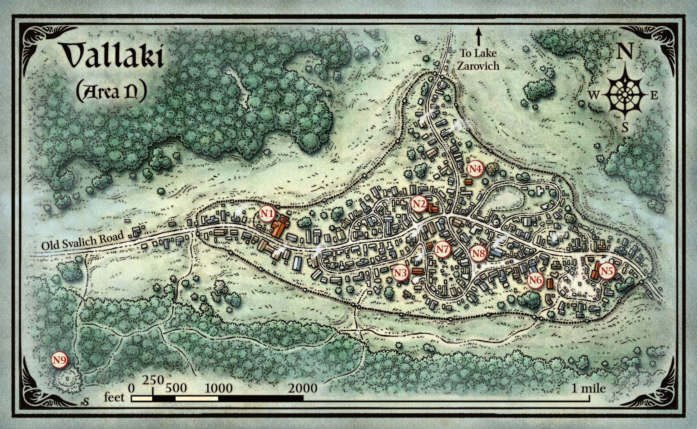
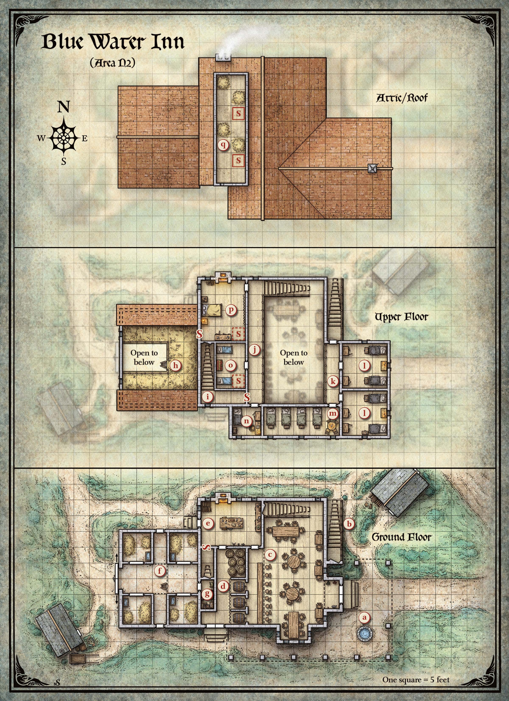
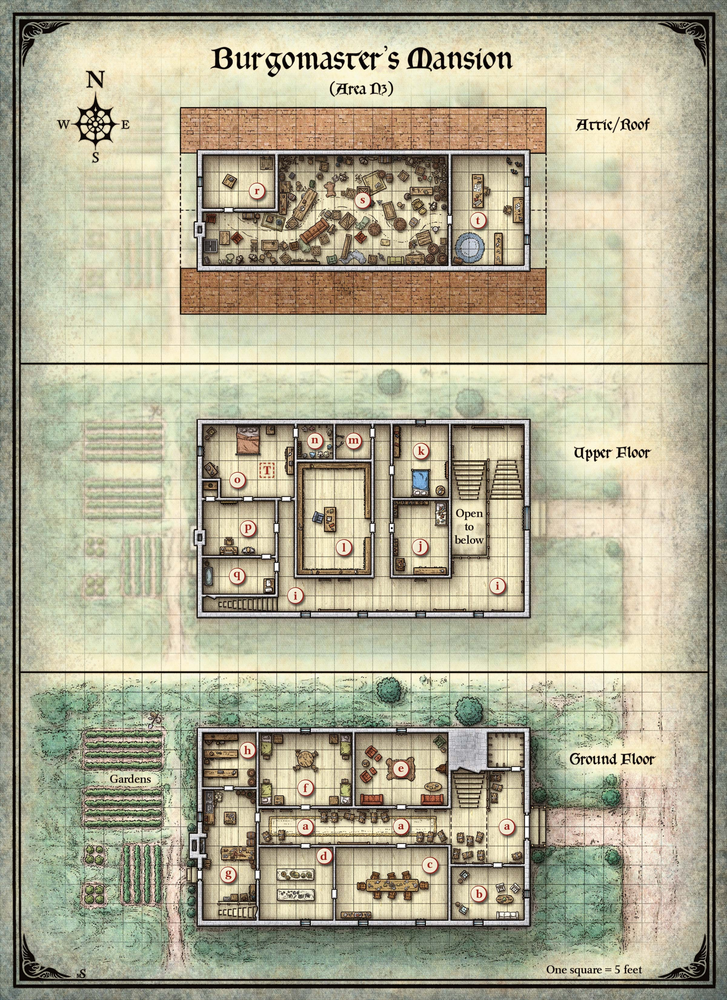
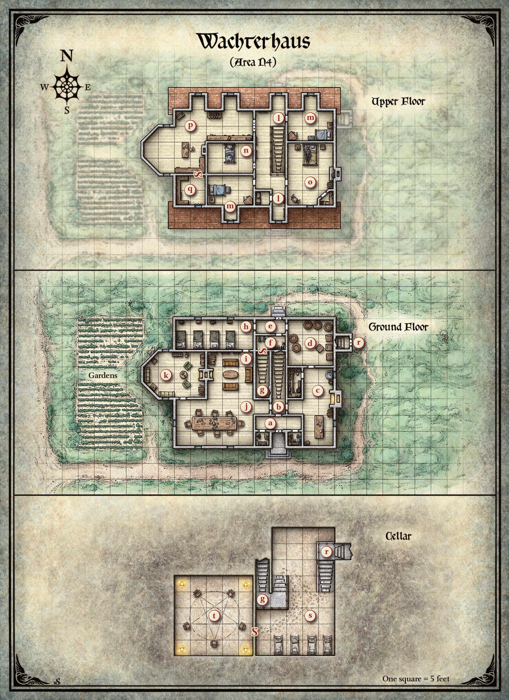

자로비치 호수(Lake Zarovich) 가까이에 위치한 발라키(Vallaki) 마을(발음: 바-라-키)은 스트라드(Strahd) 자신은 아닐지라도, 스발리치 숲(Svalich Woods)의 악으로부터 안전한 피난처처럼 보인다. 이 마을은 레이븐로프트 성(Castle Ravenloft)의 시야 밖에 있으며, 첫인상으로는 동쪽의 바로비아(Barovia) 마을만큼 우울하거나 억압된 곳으로 보이지 않는다. 그러나 발라키에서 시간을 보내는 캐릭터들은 이곳에 행복이란 없고, 오직 거짓 희망만이 있음을 금세 깨닫게 된다 — 그 거짓 희망은 스트라드 자신이 키운 것이다.
발라키는 스트라드의 군대가 계곡을 정복한 직후, 현재 부르고마스터인 바르가스 발라코비치 남작(Baron Vargas Vallakovich)의 조상에 의해 세워졌다. 발라코비치 가문은 혈관에 왕족의 피가 흐르며, 오래전부터 자로비치 가문보다 자신들이 우월하다고 믿어왔다. 발라코비치 남작은 희망과 행복이 발라키 구원의 열쇠라고 스스로를 기만하고 있다. 남작은 발라키의 모든 사람을 행복하게 만들 수 있다면, 이 마을이 어찌됐든 스트라드의 손아귀를 벗어나 원래 왔던 잊힌 세계로 돌아갈 수 있을 것이라 생각한다. 그는 마을 사람들의 사기를 올리기 위해 축제를 연이어 열지만, 대부분의 발라키 주민들은 이 축제가 미래에 대한 어떤 희망도 주지 못하고 스트라드의 분노를 부를 가능성이 더 높은, 무의미하고 목적 없는 행사라 여긴다.
지난 축제에서 발라코비치 남작은 마을 주민들에게 창끝에 꽂은 늑대 머리를 들고 거리를 행진하게 했다. 그의 다음 행사인 타오르는 태양의 축제(Festival of the Blazing Sun)는 곧 시작될 예정이다 (이 장 끝의 "특별 이벤트" 부분 참조). 이전 축제들의 낡은 화환이 여전히 발라키 건물들의 처마에 매달려 있고, 축제 당일 마을 광장에서 불태울 대형 버드나무 태양 제작이 시작되었다. 축제를 앞둔 며칠간, 발라코비치 남작은 자신의 노력이 "희망이나 믿음이 부족한 자들"에 의해 망쳐지지 않도록 지역 불평분자들을 체포하여 차꼬에 가두기 시작했다.
이 땅에 기대어 사는 자들의 눈에는 빛이 없다. 그들은 죽은 자들만큼이나 죽어 있다.
— 스트라드 폰 자로비치(Strahd von Zarovich)
캐릭터들이 처음 발라키에 접근할 때, 다음을 읽어준다:
구 스발리치 가도(Old Svalich Road)가 북쪽과 남쪽으로 어둡고 음울한 산에 둘러싸인 계곡으로 접어든다. 숲이 뒤로 물러나며 나무 방책으로 둘러싸인 침울한 산간 마을이 드러난다. 짙은 안개가 이 벽에 바짝 밀려들어, 마치 안으로 들어갈 길을 찾는 듯, 마을이 잠들기를 바라는 듯하다.
비포장 도로가 한 쌍의 그림자진 인물이 뒤에 서 있는 튼튼한 철문 앞에서 끝난다. 문 바깥 도로 양옆에는 늑대 머리가 꽂힌 반 다스의 창이 땅에 박혀 있다.
15피트 높이의 벽이 마을을 둘러싸고 있으며, 수직으로 세운 통나무들이 굵은 밧줄과 모르타르로 결합되어 있다. 각 통나무의 꼭대기는 뾰족하게 깎여 있다. 방책 안쪽에는 지면에서 12피트 높이에 나무 비계가 설치되어 있어 경비병들이 벽 너머를 살필 수 있다.

철봉으로 만든 세 개의 높은 관문이 마을로 통한다:
무거운 철 사슬과 철 자물쇠가 밤에 관문을 잠가 둔다. 낮에는 관문이 닫혀 있지만 보통 잠기지는 않는다.
각 관문 바로 안쪽에 두 명의 마을 경비병(LG 남녀 인간)이 서 있다. 이들은 창 대신 파이크(사거리 10 ft., 명중 시 1d10 + 1 관통 피해)를 지니고 있다. 이 무기는 관문 철봉 사이로 크리처를 찌를 수 있을 만큼 길다. 경비병들은 모든 방문자를, 특히 밤에 도착하는 자들을 의심의 눈초리로 맞이한다. 캐릭터들이 밤에 도착하면, 한 명 이상이 DC 20 매력(설득) 판정에 성공해야 경비병들이 자물쇠를 풀고 들여보내 준다.
관문 중 하나에서 문제가 발생하면, 그곳의 경비병들이 "무기를 들어라!"라고 외친다. 이 외침은 발라키 전체에 울려 퍼져 몇 분 안에 마을 전체가 경계 태세에 돌입한다. 발라키에는 24명의 인간 경비병이 있으며, 그중 절반은 항상 근무 중이다 (6명은 관문에서 보초를 서고, 6명은 성벽을 순찰한다). 마을은 또한 곤봉, 단검, 횃불로 무장한 50명의 건장한 인간 일반인으로 민병대를 소집할 수 있다.
캐릭터들이 부르고마스터의 저택(구역 N3) 이외의 주거지를 탐색하면, d20을 굴려 다음 표를 참조하여 가옥의 거주민을 결정한다.
| d20 | 거주민 |
|---|---|
| 1–3 | 없음 |
| 4–5 | 2d4 쥐 떼 |
| 6–18 | 발라키 마을 주민 |
| 19–20 | 발라키 사교도 |
쥐가 들끓는 집은 처음에는 버려진 것처럼 보인다. 쥐들은 스트라드의 하인이며, 캐릭터들이 집 내부를 탐색하면 공격한다.
발라키 마을 주민의 집에는 1d4 성인(남녀 인간 일반인)과 1d8 − 1 아이(남녀 인간 비전투원)가 있다. 문 앞에서 귀를 기울이면 안에서 잡담 소리가 들린다. 마을 주민들은 자진해서 낯선 이를 집에 들이지 않지만, 닫힌 문 뒤에서나 현관에 서서 캐릭터들과 대화는 한다.
사교도 은거처에는 2d4 발라키 성인(LE 남녀 사교도)과 이들을 기도로 이끌거나 의식 희생을 주관하는 사교 광신도(LE 남성 또는 여성) 한 명이 있다. 이 사교도들은 악마를 숭배하며 피오나 와흐터 부인(Lady Fiona Wachter, 구역 N4 참조)을 자신들의 영적 지도자로 여긴다.
모든 바로비아인이 아는 정보("바로비아 전승"은 제2장 참조)에 더해, 발라키 주민들은 다음과 같은 지역 전승을 알고 있다:
아래 구역들은 위의 발라키 지도에 표시된 라벨에 해당한다.
교회의 지도는 제공되지 않는다. 필요하다면 이 교회가 바로비아 마을의 교회(제3장, 구역 E5)와 같은 구조를 가지되, 지하실은 없다고 가정한다.
이 구부정하고 수백 년 된 석조 교회는 뒤쪽에 불룩한 첨탑을 가지고 있으며, 벽면에는 경건한 성인들을 묘사한 금이 간 스테인드글라스 창이 줄지어 있다. 연철 울타리가 교회 옆의 묘비 정원을 둘러싸고 있다. 묘비 사이로 옅은 안개가 기어 다닌다.
이 교회는 아침의 군주(Morninglord)에게 봉헌되었으며, 유골이 한때 제단 아래에 안치되어 있던 성 안드랄(St. Andral)의 이름을 딴 것이다 ("성 안드랄의 유골" 부분 참조).
루시안 페트로비치 신부(Father Lucian Petrovich, LG 남성 인간 사제)가 교회를 관리하며 사기를 높이기 위해 최선을 다한다. 그를 돕는 것은 고아이자 제단 시봉 소년인 예스카(Yeska, LG 남성 인간 비전투원)이다. 항상 이마에 주름이 잡힌 건장한 청년 밀리보이(Milivoj, 아래 참조)가 정원을 관리하고 무덤을 판다.
밤에 교회는 2d6 + 6 겁에 질린 발라키 성인(남녀 인간 일반인)과 2d6 똑같이 두려움에 떠는 발라키 아이(남녀 인간 비전투원)로 가득 찬다. 루시안 신부(Father Lucian)는 밤마다 모인 교인들에게 기도와 성 안드랄의 보호의 약속을 전한다. 루시안 신부의 밤 교인 가운데에는 윌레미나 리칼로바(Willemina Rikalova)라는 슬픈 늙은 여인이 있다. 그녀의 아들인 구두 수선공 우도 루코비치(Udo Lukovich)는 부르고마스터에 반하는 발언을 했다는 이유로 투옥되었다(구역 N3m 참조). 그녀는 아들이 석방되기를 기도한다.
최근까지 교회는 교회 본당 제단 아래의 납골실에 봉인된 성 안드랄의 유골에 의해 스트라드의 약탈로부터 보호받고 있었다. 그러나 며칠 전 밤에 누군가 납골실에 침입하여 유골을 훔쳤기 때문에 이제 교회는 위험에 처해 있다. 최근까지 루시안 신부만이 발라키에서 유골에 대해 알고 있었지만, 그는 한 달여 전 겁에 질린 예스카를 안심시키기 위해 유골에 대해 언급한 것을 기억하고 있다. 유골이 도난당한 후, 루시안 신부는 예스카에게 다른 누군가에게도 유골 이야기를 했는지 물었다. 소년은 고개를 끄덕였지만 이름을 밝히지 않았다.
범인은 밀리보이로, 루시안 신부도 올바르게 의심하고 있다. 하지만 사제는 청년의 성미가 급해 대면하기를 꺼려왔다. 루시안 신부는 이 소식이 야기할 수 있는 불안을 두려워하여 도난을 신고하지 않았으며, 부르고마스터의 축제를 망치고 싶지 않았다. 파티에 선 성향의 성직자나 성기사가 포함되어 있다면, 루시안 신부는 캐릭터들이 도움을 줄 수 있기를 바라며 도난 사실을 언급한다.
성 안드랄의 납골실은 예배당 아래 10피트 정사각형, 5피트 높이의 방이다. 납골실에 접근하기 위해 밀리보이는 삽으로 예배당 바닥판을 들어올렸다. (바닥판은 이후 교체되었다.) 캐릭터 중 하나가 밀리보이에게 맞서 DC 10 매력(위협) 판정에 성공하면, 그는 예스카가 자신에게 유골에 대해 알려주었음을 시인한다. 그는 또한 지역 관 제작자 헨릭 판 데어 부르트(Henrik van der Voort, 구역 N6)에게 정보를 전했으며, 어린 남동생과 여동생을 먹여 살리기 위한 돈을 받는 대가로 헨릭을 위해 유골을 훔쳤음을 시인한다.
유골의 도난으로 교회는 스트라드의 하수인들의 공격에 취약해졌다 (이 장 끝의 "특별 이벤트" 부분의 "성 안드랄의 축일(St. Andral's Feast)" 참조). 유골이 원래 자리로 돌아오면, 성 안드랄 교회는 다시 신성한 땅이 되어 건물이 할로우(hallow) 주문으로 보호받는 것과 같은 효과를 받는다.
이 크고 2층짜리 목조 건물의 석재 기초와 처진 기와 지붕의 굴뚝에서 잿빛 연기가 피어오르고, 지붕 위에는 까마귀 여러 마리가 앉아 있다. 정문 위에 걸린 채색 나무 간판에는 푸른 폭포가 그려져 있다.
푸른 물 여관(Blue Water Inn)은 발라키 주민들의 주요 모임 장소로, 특히 밤에 그러하다. 여관 주인 어윈 마르티코프(Urwin Martikov)는 여관을 이 땅의 악으로부터의 성역으로 여긴다. 문제가 발생하면 모든 창문과 문을 안에서 빗장으로 잠글 수 있다.
하룻밤 숙박 비용은 1 ep이다. 식사를 원하는 캐릭터에게는 추가 비용 없이 뜨거운 비트 수프와 갓 구운 빵이 제공된다. 조리된 늑대 스테이크는 1 ep이다.
여관은 퍼플 그레이프매쉬 No. 3(Purple Grapemash No. 3) 포도주 한 파인트를 3 cp에, 더 상급인 레드 드래곤 크러쉬(Red Dragon Crush) 포도주 한 파인트를 1 sp에 제공한다. 캐릭터들이 포도주에 불평하면 어윈은 상처를 받는데, 그의 가문이 직접 만든 것이기 때문이다.
여관의 포도주 공급이 거의 바닥났고, 포도주 마법사(Wizard of Wines) 양조장에서 오는 최신 배달이 연체 중이다. 캐릭터들이 모험가라고 주장하면, 어윈은 최신 배송을 지연시키는 것이 무엇인지 알아봐 줄 수 있는지 부탁하며, 포도주와 함께 돌아오면 무료 숙식을 약속한다.

카드 점술이 여관에 보물이 숨겨져 있다고 밝히면, 깃털의 수호자는 캐릭터들이 보물을 보호할 능력이 있음을 확인할 때까지 보물의 위치를 알려주지 않는다. 그들의 능력을 시험하기 위해, 어윈은 캐릭터들에게 다음 임무를 준다:
어윈이 당신을 한쪽으로 데려가 목소리를 낮춘다. "포도주가 거의 다 떨어졌고, 다음 배송이 늦어지고 있소. 내 포도주를 가져다주면 당신이 찾는 것을 드리겠소. 포도원과 양조장은 여기서 서쪽으로 몇 마일 떨어져 있소. 구 스발리치 가도와 표지판을 따르시오."
어윈은 자신의 까탈스러운 아버지 다비안 마르티코프(Davian Martikov)가 지역 양조장이자 포도원인 포도주 마법사(Wizard of Wines, 제12장)를 소유하고 있다는 사실을 언급하지 않는다. 어윈과 그의 아버지 사이에는 악감정이 있다 (어윈과 다니카는 아버지를 "늙은 까마귀"라 부른다). 어윈은 양조장을 직접 방문할 수 있지만, 아버지를 상대하는 것이 캐릭터들의 능력에 대한 합당한 시험이 된다고 여기며, 임무를 완수하고 포도주 배송물과 함께 돌아오면 약속을 지킨다.
어윈은 까마귀 형태의 늑대까마귀 한 마리를 보내 파티의 진행 상황을 멀리서 관찰하게 한다. 캐릭터들이 곤경에 빠지면 늑대까마귀가 즉시 어윈에게 보고한다.
3피트 높이의 돌 테두리가 이 40피트 깊이의 이끼 낀 우물 입구를 둘러싸고 있다. 여관은 이 우물에서 깨끗한 물을 끌어 쓴다.
나무 계단이 여관 바깥 벽을 끼고 올라가 위층의 객실(구역 N2l 및 N2m)로 통한다. 계단 꼭대기의 튼튼한 나무 문은 안에서 빗장으로 잠글 수 있다.
입구 현관에 축축한 외투들이 못에 걸려 있다. 선술장은 탁자와 의자로 빼곡하며, 그 사이로 좁은 통로가 구불구불 이어진다. 발코니 아래 한쪽 벽을 따라 바가 늘어서 있으며, 이 발코니에는 북쪽 벽을 끼고 있는 나무 계단으로 올라갈 수 있다. 또 다른 발코니가 동쪽 입구 위로 돌출해 있다. 모든 창문에는 두꺼운 덧문과 빗장이 달려 있다. 바 위와 탁자 위에 걸린 랜턴이 방을 흐릿한 주황빛으로 비추며 벽에 그림자를 드리우는데, 벽 대부분은 나무 판에 장착된 늑대 머리로 장식되어 있다.
선술장으로 통하는 양쪽 문은 안에서 빗장으로 잠글 수 있다.
바 뒤쪽의 받침대에 걸리고 벽감에 들어간 세 개의 포도주 통이 있으며, 각각 4분의 3이 비어 있다. 두 통에는 퍼플 그레이프매쉬 No. 3(저렴한 포도주)이, 세 번째 통에는 레드 드래곤 크러쉬(고급 포도주)가 들어 있다. 각 통에는 놋쇠 꼭지가 박혀 있다.
다니카 마르티코바(Danika Martikov)가 보통 바를 맡으며, 남편은 주방(구역 N2e)에서 바쁘다. 두 아들 브롬과 브레이가 돌아다니며 쉽게 발에 걸린다.
새벽과 정오 사이에는 손님이 없으며, 마르티코프 가족은 위층 침실(구역 N2o 및 N2p)이나 다락(구역 N2q)에 있다.
정오부터 해질녘까지 선술장에는 2d4 지역 손님(남녀 일반인)이 있다. 해질녘부터 자정까지는 2d8 발라키 주민이 있다. 또한, 이 시간에 다음 인물 중 한 명 이상이 자리에 있을 수 있다.
늑대 사냥꾼. 졸다르 졸다로비치(Szoldar Szoldarovich)와 예브게니 크루슈킨(Yevgeni Krushkin, N 남성 인간 정찰병)은 푸른 물 여관의 단골인 지역 사냥꾼이다. 이들은 늑대를 죽이고 고기를 팔아 생계를 이으며, 작업은 위험하고 피비린내 나는 일이다. 두 남자 모두 음울하며 눈에는 쫓기는 듯한 빛이 서려 있다.
이 두 사람은 침울한 인물이지만, 돈을 벌 기회를 거의 놓치지 않는다. 캐릭터들이 안내인이나 바로비아 땅에 대한 정보를 찾고 있다면, 졸다르와 예브게니가 도움이 될 수 있다. 이들은 낮 동안 발라키 성벽 너머로 나가는 것을 두려워하지 않으며, 숲과 계곡을 잘 알고 있다. 하루 5 gp에 안내인으로 봉사하거나, 무료 음료 대가로 주요 랜드마크에 대한 길을 알려줄 용의가 있다. "이 저주받은 영역"에서 밤에 여행하는 것은 어리석다고 생각하며, 보수가 엄청나지 않는 한 (100 gp 이상) 그렇게 하지 않을 것이다.
드물게 할 말이 있을 때 졸다르는 퉁명스럽게 말하고, 예브게니는 보통 친구의 말을 짧게 따라한다. 졸다르는 죽인 늑대마다 활에 흠집을 내고, 예브게니는 사냥할 때마다 늑대 가죽 외투에 새 덧대기를 추가한다. 두 사람 모두 가족이 있지만 대부분의 시간을 함께 보내며, 슬픔을 술로 달래거나 숲에서 사냥한다. 선술장 벽을 장식하는 늑대 머리 대부분은 이들의 솜씨이다.
와흐터 형제. 니콜라이(Nikolai)와 칼 와흐터(Karl Wachter, N 남성 인간 귀족)는 귀족 출신 형제이다. 이들은 항상 말썽을 찾는 뻔뻔한 술주정뱅이이지만, 잘 무장한 낯선 이와 싸움을 벌일 만큼 어리석지는 않다. 어머니 피오나 와흐터(구역 N4 참조)는 마을의 영향력 있는 인물이지만, 아들들은 절대 어머니에 대해 이야기하지 않는다. 그들은 캐릭터들의 아찔한 모험담을 듣거나, 캐릭터들이 어떻게 발라키를 부르고마스터의 광기로부터 해방시킬 계획인지 듣는 것을 더 좋아한다.
릭타비오. 현재 푸른 물 여관의 유일한 투숙객은 화려한 옷차림의 하프엘프 음유시인으로, 릭타비오(Rictavio)라는 이름을 쓴다 — 전설적인 뱀파이어 사냥꾼 루돌프 판 리히텐(Rudolph van Richten, 부록 D 참조)이 채택한 가짜 신분이다. 그는 선술장 손님들에게 거의 믿기 어려울 만큼 황당한 이야기를 들려주면서도 모두 사실이라고 주장한다. 릭타비오는 먼 나라에서 온 유랑극단 단장이라 주장한다. 어윈 마르티코프의 관대함과 선량한 성품을 이용해 거의 한 달간 여관에 머물고 있다. 도착했을 때 그에게는 피콜로(Piccolo)라는 원숭이가 함께 있었다. 원숭이는 여관에서 환영받지 못해 릭타비오가 지역 장난감 제작자(구역 N7 참조)에게 주었다.
릭타비오는 음악적 재능이 없다고 인정하면서도, 먼 나라의 이야기로 주민들을 즐겁게 해준다. 하루에 두 번, 새벽과 해질녘에 그는 사과 몇 개와 손수건에 싼 조리된 늑대 스테이크를 가지고 여관을 나선다. 그는 음식이 자신의 뚱뚱한 친구인 "빈곤한 장난감 제작자"(구역 N7)와 그의 애완 원숭이를 위한 것이라 주장한다. 사실 사과는 그의 말 드루실라(Drusilla, 구역 N2f)를 위한 것이고, 스테이크는 그가 포획한 검치호(saber-toothed tiger, 구역 N5)를 위한 것이다.
여관에 머무는 동안, 릭타비오는 깃털의 수호자에 대한 정보를 조용히 수집하며 마을의 모든 늑대까마귀 정체를 파악하려 한다. 또한 비스타니, 특히 마을 바로 바깥 야영지(구역 N9)에 사는 비스타니에 대해 가능한 한 많이 알아내려 하고 있다. 그들이 스트라드와 결탁했다고 결론 내리면, 릭타비오는 늑대까마귀들의 지원 여부와 관계없이 훈련된 검치호를 그들에게 풀어놓을 계획이다.
릭타비오는 신분을 숨기기 위해 변장의 모자(hat of disguise)와 정신 차폐의 반지(ring of mind shielding)를 착용하고 있다. 그는 자신의 유랑극단 마차(구역 N5)의 문을 여는 철제 열쇠를 가지고 다닌다.
이 복도에는 커튼이 쳐진 세 개의 벽감과 포도주 통이 가득 찬 더 넓은 공간이 있다.
마르티코프 가족은 이곳에 포도주를 보관한다. 붉은 커튼 뒤에 세 개의 벽감이 있으며, 각각 나무 받침대 위에 옆으로 뉘인 반쯤 비어 있는 포도주 통 하나가 들어 있다. 주방(구역 N2e)으로 통하는 문 근처에 빈 포도주 통 12개가 두 개씩 쌓여 있다. 모든 통에는 포도주 마법사(Wizard of Wines) 이름이 불로 새겨져 있다.
15개의 통 중 9개 — 커튼 친 벽감의 통 2개 포함 — 에는 양조장 이름 아래 다음 라벨이 불로 새겨져 있다: 퍼플 그레이프매쉬 No. 3. 15개의 통 중 6개 — 커튼 친 벽감의 통 1개 포함 — 에는 다른 라벨이 있다: 레드 드래곤 크러쉬.
바깥으로 통하는 양쪽 문은 안에서 빗장으로 잠글 수 있다.
이 방은 요리를 사랑하는 사람의 주방처럼 보인다. 냄비 더미, 조리 기구와 재료 선반이 줄지어 있는 벽, 온갖 종류의 기분 좋은 냄새가 난다. 두 개의 랜턴이 어수선함 한가운데의 튼튼한 소나무 작업대 위에 걸려 있다. 화덕 위에서 수프 냄비가 부글부글 끓고 있다.
대부분의 식사를 준비하는 어윈 마르티코프가 하루 종일 이곳에 있다. 가끔 두 아들의 도움을 받지만, 아이들은 쉽게 주의가 산만해진다. 동쪽 벽의 찬장에는 여관의 칼붙이와 식기 대부분이 보관되어 있으며, 가치 있는 것은 없다. 서쪽 벽의 문은 바깥으로 통하며 보통 안에서 빗장이 걸려 있다.
남쪽 벽 서쪽 끝에 있는 비밀문을 밀어 열면 구역 N2i로 올라가는 나무 계단이 나타난다.
이 방의 서쪽 벽에 있는 미닫이 나무 문은 철 자물쇠와 사슬로 잠겨 있다. 어윈이 자물쇠 열쇠를 가지고 있다. 북쪽과 남쪽의 문은 안에서 빗장을 걸 수 있지만 보통 잠겨 있지 않다.
이 마구간 안을 들여다보니 새의 울음소리와 말의 애처로운 울음이 들린다. 마구간 칸은 깨끗하고 잘 관리되어 있다. 그중 하나에 잿빛 암말이 있다. 동쪽 벽에 작은 문이 있고, 나무 사다리가 위층 다락으로 통한다. 다락을 둘러싼 나무 난간 위에 수십 마리의 까마귀가 앉아 있다.
말이 있는 캐릭터는 하룻밤 1 sp에 이곳에 보관할 수 있다. 잿빛 암말은 드루실라(Drusilla)라는 이름의 짐말이며, 사과를 좋아한다. 이 말은 릭타비오(구역 N2c 참조)의 소유이다.
동쪽 벽의 작은 문을 당기면 구역 N2g가 나타난다. 다락은 구역 N2h에서 설명한다.
이 작은 방은 나무 계단(구역 N2i) 아래에 있다. 나무 못에 안장과 말 두 필 분의 갑주가 걸려 있다. 잠기지 않은 나무 상자에는 말편자 12개, 나무 망치, 그리고 말편자 못 더미가 들어 있다.
먼지 낀 한 쌍의 창문으로 스며드는 흐릿한 빛이 쇠스랑이 꽂힌 건초 더미를 드러낸다. 까마귀가 이 보금자리를 지배하고 있다 — 수백 마리가 보인다.
다락을 철저히 수색하는 캐릭터는 쇠스랑 세 개와 건초 더미 아래에 묻힌 잠긴 나무 상자(아래 "보물" 참조)를 발견하며, 비밀문 옆에 있다. 캐릭터들이 상자를 건드리면 까마귀들이 네 개의 까마귀 떼로 모여 공격한다. 두 떼가 죽으면 나머지는 도망친다. 그렇지 않으면 캐릭터들이 상자를 건드리지 않으면 공격을 멈춘다. 전투가 3라운드 이상 지속되면, 어윈 마르티코프와 다른 늑대까마귀 두 명이 소란을 듣고 (인간 형태로) 조사하러 온다.
다락 뒤편의 비밀문을 밀어 열면 그 너머의 침실(구역 N2p)이 나타난다. 비밀문 반대편 방에서 새어 나오는 빛이 문 틈으로 비치기 때문에 발견에 능력 판정이 필요하지 않다.
잠긴 상자 안에는 140 ep, 70 pp, 건강의 비약(elixir of health) 2개, 치유 물약(potion of healing) 3개, 그리고 회색 속임수 주머니(gray bag of tricks)가 들어 있다. 동전에는 스트라드 폰 자로비치(Strahd von Zarovich)의 옆모습이 양각되어 있다.
북쪽의 나무 계단이 15피트 아래 계단참으로 내려간다. 창문이 서에서 동으로 이어지는 짧은 나무 패널 복도를 흐릿하게 비춘다.
투숙객들에게는 여관의 비밀 복도에 대해 알려주지 않는다. 릭타비오는 마르티코프 소년들이 자기 방(구역 N2n)에 가장 가까운 비밀문을 여닫는 소리를 들었기 때문에 이 복도의 존재를 알고 있다.
이 구역의 양쪽 끝에 비밀문이 하나씩 있으며, 복도 안에서는 둘 다 쉽게 발견할 수 있다 (능력 판정 불필요). 계단 아래쪽의 북쪽 비밀문을 당기면 그 너머 주방(구역 N2e)이 나타난다. 동쪽 비밀문을 당기면 선술장을 내려다보는 발코니(구역 N2j)가 나타난다.
나무 발코니가 선술장의 전체 길이에 걸쳐 뻗어 있으며, 까마귀 문양이 조각된 나무 난간으로 둘러싸여 있다. 선술장의 수많은 랜턴이 서까래를 비추고 뾰족한 천장에 불길한 그림자를 드리운다.
발코니 바닥은 선술장 바닥에서 15피트 위에 있다.
서쪽 벽 남쪽 끝의 비밀문을 밀어 열면 그 너머 나무 패널 복도(구역 N2i)가 나타난다.
이 20피트 길이의 발코니는 바를 잘 내려다볼 수 있으며, 까마귀 문양이 조각된 나무 난간이 있다. 선술장의 수많은 랜턴이 서까래를 비추고 뾰족한 천장에 불길한 그림자를 드리운다.
발코니 바닥은 선술장 바닥에서 15피트 위에 있다.
이 두 방은 동일한 가구를 갖추고 있다.
이 15피트 정사각형 방의 맞은편 구석에 아늑한 침대 두 개와 짝을 이루는 발밑 상자가 놓여 있다. 각 침대 위에는 늑대 가죽이 수북이 쌓여 있다. 침대 사이, 덧문이 달린 창문 아래 탁자 위에 램프가 놓여 있다. 문 옆 벽에는 두 개의 키 큰 검은색 옷장이 서 있다.
이 방의 문은 안에서 잠글 수 있으며, 각 투숙객에게 열쇠가 주어진다. 어윈과 다니카가 여분의 열쇠를 갖고 있다. 발밑 상자와 옷장은 비어 있으며 투숙객이 사용하도록 되어 있다.
짚 매트리스가 깔린 평범한 침대 네 개가 이 밝은 방의 북쪽 벽을 따라 줄지어 있다. 각 침대에는 옷과 기타 소지품을 보관할 수 있는 짝을 이루는 발밑 상자가 딸려 있다. 문 맞은편 구석에 탁자와 의자 네 개가 놓여 있다. 탁자 위에 놓인 기름 램프가 밝은 노란 불꽃을 내뿜는다.
이 방의 문은 안에서 잠글 수 있으며, 각 투숙객에게 열쇠가 주어진다. 어윈과 다니카가 여분의 열쇠를 갖고 있다. 발밑 상자는 비어 있으며 투숙객이 사용하도록 되어 있다.
릭타비오가 이 방의 열쇠를 가지고 있으며, 항상 잠겨 있다. 어윈과 다니카가 여분의 열쇠를 갖고 있다. 문의 자물쇠를 따낼 수 있지만, 문이 아래 선술장에서 잘 보이므로 신중함이 필요하다.
이 작은 객실에는 늑대 가죽이 수북이 쌓인 침대, 발밑 상자, 키 큰 옷장, 그리고 짝을 이루는 의자가 딸린 책상이 있다. 책상 위에 빨간 가죽 표지로 묶인 일지 옆에 기름 램프가 놓여 있다.
릭타비오는 자정과 새벽 사이에 이곳에서 잔다. 새벽에 말(구역 N2f)과 마차(구역 N5)를 확인하러 나갔다가 정오쯤 여관으로 돌아온다. 정오와 해질녘 사이에는 40%의 확률로 이곳에 있으며, 그렇지 않으면 선술장(구역 N2c)에 있다. 해질녘에는 말과 마차를 돌보러 여관을 나갔다가 방으로 돌아와 밤을 보낸다.
릭타비오는 방에 가치 있거나 불리한 것을 남겨둘 만큼 어리석지 않다. 발밑 상자와 옷장에는 일반 의류와 여행복밖에 없다.
책상 위의 일지는 릭타비오가 자신의 유랑극단을 위해 새로운 공연을 찾아다니는 연예인이라는 환상을 지속시키기 위해 만든 위조물이다. 그의 글에는 드루실라와의 대화가 자주 언급되는데 (일지에는 그것이 릭타비오의 말 이름이라는 사실은 밝히지 않는다), 마차를 타고 한 길고 지루한 여정들이 기록되어 있다. 릭타비오는 또한 여행 중 본 다양한 "기이한 것들"에 대해 기록했는데, 다음과 같은 것들이 포함되어 있다:
두 개의 작고 아늑한 침대 사이에 크고 채색된 장난감 상자가 놓여 있다. 나무 패널 위 벽에는 날아가는 까마귀의 벽화가 그려져 있다.
브롬(Brom)과 브레이 마르티코바(Bray Martikova)는 이 방에서 많은 시간을 보내지 않는다. 장난감 상자에는 방치된 장난감 더미가 들어 있으며, 대부분에 "재미 없으면, 블린스키 아니다!(Is No Fun, Is No Blinsky!)"라는 문구가 새겨져 있다. 장난감에는 다음이 포함되어 있다:
8피트 높이 천장에 숨겨진 다락문이 비밀 다락(구역 N2q)으로 통한다.
짝을 이루는 협탁이 빨간 비단 캐노피가 달린 큰 나무 틀 침대 양쪽에 놓여 있다. 침대 맞은편에는 아름다운 산 계곡을 묘사한 태피스트리가 걸려 있다. 나머지 벽에는 벽난로와 옷장이 자리하고 있다.
어윈과 다니카는 매일 밤 이 방으로 퇴실한 뒤 다락(구역 N2q)으로 올라가 잔다. 이 방은 겉치레용이며 가치 있는 것은 없다.
남쪽 벽 서쪽 끝의 비밀문을 당기면 그 너머 다락(구역 N2h)이 나타난다.
8피트 높이 천장에 숨겨진 다락문이 비밀 다락(구역 N2q)으로 통한다.
이 10피트 폭, 35피트 길이의 다락은 천장이 서쪽으로 경사져 있어 높이가 8피트에서 5피트로 낮아진다. 네 개의 짚 둥지가 바닥을 덮고 있으며, 잠긴 철제 금고가 북쪽 벽에 기대어 있다. 남쪽 벽에 작고 정사각형의 구멍이 바깥으로 나 있다. 철 경첩이 달린 두 개의 다락문이 바닥에 설치되어 있다.
마르티코프 가족은 밤에 이곳에서 혼합체 형태로 잔다. 남쪽 벽의 구멍은 까마귀나 다른 초소형 크리처만 지나갈 수 있을 만큼 작다. 늑대까마귀들은 이 구멍을 탈출구로 사용할 수 있다.
금고는 아래 "보물"에서 설명한다.
바닥에 명확하게 보이는 두 개의 다락문을 당기면 바로 아래에 있는 침실(구역 N2o 및 N2p)이 나타난다.
어윈이 잠긴 철제 금고의 열쇠를 가지고 있다. 도둑 도구와 DC 20 민첩 판정에 성공하면 자물쇠를 딸 수 있다. 금고에는 150 ep이 든 주머니(각 동전에 스트라드 폰 자로비치의 옆모습이 새겨져 있음), 보석 장신구 6점(각각 250 gp 가치), 치유 물약(potion of healing) 3개가 들어 있다.
카드 점술이 이곳에 보물이 있다고 밝히면, 그것은 철제 금고 안에 있다.

이 저택은 회반죽을 바른 석벽으로 이루어져 있으며, 오랜 세월과 방치로 회반죽이 벗겨진 흉터가 곳곳에 드러나 있다. 커튼이 모든 창문을 덮고 있으며, 저택의 이중 정문 위에 있는 커다란 아치형 개구부도 예외가 아니다.
낮 동안에는 사람들이 끊임없이 저택을 드나든다. 경비병들은 "악의적 불행"으로 고발된 범죄자들을 데려온다. 남녀가 나뭇가지 다발을 들고 와서 저택의 대현관(구역 N3a)에 쌓아두며, 타오르는 태양의 축제(Festival of the Blazing Sun)를 위한 버드나무 태양 제작이 시작될 때까지 그대로 둔다.
캐릭터들이 정문을 두드리면, 하녀(LG 여성 인간 평민)가 들여보내 서재(구역 N3e)로 안내한 뒤 남작을 부르러 간다.
액자에 넣은 초상화들이 이 웅장한 현관 홀의 벽을 장식하고 있으며, 조각된 난간이 달린 넓은 계단이 특징이다. 현관 홀에 붙은 긴 카펫 깔린 복도가 저택 거의 전체 길이에 걸쳐 뻗어 있으며, 끝에 있는 문을 포함해 여러 문이 나 있다. 나뭇가지 다발이 벽에 기대어 쌓여 있다.
나뭇가지들은 타오르는 태양의 축제를 위한 나무 태양 모형을 만들 때까지 이곳에 보관되고 있다.
계단은 위층 갤러리(구역 N3i)로 올라간다.
초상화들은 남작, 그의 가족, 그리고 조상들을 묘사한다. 자세히 살펴보면 묘사된 사람들 중 일부가 매우 비슷하게 생겼음을 알 수 있다.
현관 홀의 북동쪽 구석에는 고급 망토, 코트, 부츠로 가득 찬 현관이 자리 잡고 있다.
이 응접실에는 전체적으로 여성스러운 손길이 느껴지는 훌륭한 가구와 커튼이 갖추어져 있다.
남작 부인이 가끔 이곳에서 손님을 접대한다.
캐릭터들은 이 방에 다가가면서 여성들의 수다 소리를 들을 수 있다. 처음으로 안을 들여다보면 다음을 읽어준다:
연철로 만든 샹들리에에 밀랍 양초가 꽂혀 있으며, 광택 나는 나무 식탁 위에 매달려 있다. 테이블 주위에는 다양한 연령의 여성 여덟 명이 편안한 등받이 높은 의자에 앉아 있다. 그들은 색 바랜 옷을 입고, 차를 마시며, 케이크를 먹고 있다. 아홉 번째 여성은 말끔하게 차려입고 매우 만족한 표정으로 테이블 주위를 돌며 다가오는 축제의 장식에 대해 흥분하여 이야기하고 있다.
테이블에 앉은 여성들은 남작 부인 리디아 페트로브나의 초대를 받은 발라키 농민 여덟 명(여성 평민)으로, 차와 케이크로 매수된 것이다. 리디아는 이 여성들에게 어린이 의상을 바느질하고 타오르는 태양의 축제를 위한 버드나무 태양을 엮는 일을 맡겼다.
리디아는 캐릭터들이 남편인 부르고마스터의 초대로 온 것이라고 가정한다. 그녀는 하녀를 불러 캐릭터들을 서재(구역 N3e)로 안내하게 한 뒤, 발라코비치 남작(구역 N2l 참조)에게 손님이 도착했음을 알리게 한다.
식당 한쪽 구석에 서빙 테이블이 놓여 있다.
흰 시트가 방 중앙의 평범한 나무 테이블 두 개를 덮고 있다. 한 테이블 위에는 광택을 낸 은식기 한 세트가 깔끔하게 정리되어 있다. 다른 테이블은 순무와 비트가 담긴 버들 바구니로 덮여 있다.
비트와 순무는 타오르는 태양의 축제를 위한 것이다 (이 장 끝의 "특별 이벤트" 섹션 참조).
은식기 세트의 가치는 150 gp이다.
부르고마스터를 만나고자 하는 캐릭터들은 이곳으로 안내된다.
쿠션 의자와 소파가 이 아늑하고 카펫이 깔린 서재의 벽을 따라 늘어서 있다. 방에서 파이프 담배 냄새가 풍기며, 동쪽 벽에는 성난 표정의 갈색 곰 머리가 박제되어 걸려 있다.
박제된 곰 머리는 방문객을 불안하게 만들기 위한 것이다. 부르고마스터를 자극하지 말라는 은근한 경고 역할을 하며, 부르고마스터는 대부분의 시간을 도서관(구역 N3l)에서 보낸다. 부르고마스터는 아버지가 곰을 사냥했다고 주장하지만, 실제로 이 곰 머리는 늑대 사냥꾼 졸다르 졸다로비치(Szoldar Szoldarovich, 구역 N2)의 아버지인 고 졸다르 그리고로비치(Szoldar Grygorovich)가 그의 가문에 선물한 것이다.
이 방에는 간소한 침대 네 개와 같은 수의 평범한 나무 궤가 있다.
가사 인력은 하녀(LG 여성 인간 평민) 한 명과 요리사(LG 남성 인간 평민) 한 명으로 구성된다. 나머지 두 침대는 실종된 집사와 남작 부인의 시녀의 것이었다 (구역 N3t 참조). 궤에는 직원들의 일상복과 유니폼이 들어 있다.
검은 작업복 위에 흰 앞치마를 두른 요리사가 이 따뜻하고 잘 갖추어진 주방에서 분주하게 움직이고 있다. 한쪽 구석의 계단이 위층으로 올라간다.
계단은 위층 갤러리(구역 N3i)로 이어진다. 서쪽 벽의 문은 바깥 정원으로 통한다. 이 문은 보통 잠겨 있으며, 요리사와 부르고마스터 모두 이를 여는 열쇠를 가지고 있다.
이 식료품 저장실에는 식품이 진열된 선반이 있지만, 선반의 절반은 비어 있다. 동쪽 벽에 와인 통 두 개가 세워져 있다.
이 식료품 저장실은 누구도 기억하는 한 완전히 채워진 적이 없다. 두 통에는 마법사의 포도원(Wizard of Wines) 와이너리에서 만든 레드 드래곤 크러쉬(Red Dragon Crush)라는 고급 와인이 들어 있다 — 이 사실은 각 통 측면에 불로 새겨져 있다.
캐릭터들이 현관 홀(구역 N3a)에서 도착하면 다음을 읽어준다:
계단이 20피트 위의 아름답게 꾸며진 갤러리로 올라가며, 서쪽으로 저택 거의 전체 길이에 걸쳐 이어진다. 액자에 넣은 풍경화들이 벽을 장식하고, 붉은 비단 커튼이 10피트 높이의 아치형 납유리 창문을 덮고 있다.
캐릭터들이 주방(구역 N3g)에서 도착하면 다음을 읽어준다:
계단이 저택 거의 전체 길이에 걸친 10피트 너비의 갤러리로 올라간다. 숨이 멎을 만큼 아름다운 풍경화들이 벽을 장식한다. 두 개의 좁은 별도 복도가 갤러리에서 북쪽으로 뻗어 나간다.
이 방의 문은 잠겨 있다. 이젝 스트라즈니(Izek Strazni)만이 유일한 열쇠를 가지고 있다.
다음 설명은 캐릭터들이 이레나 콜리아나(Ireena Kolyana)를 만난 적이 있다고 가정한다 (제3장, 구역 E4 참조). 캐릭터들이 그녀를 만나지 않았다면 마지막 문장은 읽지 않는다.
인형들. 이 방은 분처럼 하얀 피부와 적갈색 머리카락을 가진 예쁜 작은 인형들로 가득하다. 일부는 아름답게 차려입었고, 다른 것들은 소박하다. 인형들 중 일부는 긴 책장을 채우고, 다른 것들은 벽에 설치된 선반에 가지런히 놓여 있다. 또 다른 것들은 침대와 무거운 나무 궤 위에 쌓여 있다. 가장 기이한 것은, 옷을 제외하면 모든 인형이 동일하게 생겼다는 점이다. 모두 이레나 콜리아나를 닮았다.
부르고마스터의 흉폭한 부하 이젝 스트라즈니(부록 D 참조)가 밤에 이곳에서 잠을 잔다. 낮에는 주인의 일을 처리하기 위해 마을에 나가 있다. 이젝의 궤는 잠기지 않았으며 구겨진 옷 더미가 들어 있고, 그 아래에 비마법적 쇼트소드가 있다.
방을 철저히 수색하면 침대 아래에서 빈 와인 병 몇 개가 발견된다. 각 병의 라벨에는 와이너리 이름인 마법사의 포도원과 와인 이름인 퍼플 그레이프매쉬 No. 3(Purple Grapemash No. 3)이 적혀 있다.
이젝의 인형 컬렉션. 각 인형의 옷에는 "재미 없으면, 블린스키 아니다!(Is No Fun, Is No Blinsky!)"라고 적힌 작은 태그가 꿰매져 있다. 이젝은 지역 장난감 장인 가도프 블린스키(Gadof Blinsky, 구역 N7)에게 이레나의 모습을 본떠 인형을 만들게 했다.
이 멋지게 꾸며진 방에는 천개 달린 침대, 낮은 책장, 그리고 문 맞은편 벽에 나무 틀에 넣은 전신 거울이 있다. 북쪽 벽에는 아치형 납유리 창문이 나 있다. 이곳에는 특별히 이상한 것이 없어 보인다.
그의 침실에서는 빅터의 일탈적 성격이나 마법적 성향을 드러내는 것이 아무것도 없다. 책들에는 바로비아의 우화 모음집과 신화, 문장학, 기타 무해한 주제에 관한 책이 포함되어 있다.
이 창문 없는 방의 모든 벽에 바닥에서 천장까지 닿는 책장이 늘어서 있으며, 이곳에 보관된 책의 수는 실로 놀라울 정도이다. 방 중앙의 큰 책상 위에 황동 기름 램프가 놓여 있다. 책상 뒤의 의자는 편안하게 쿠션이 채워져 있으며, 등받이에 포효하는 곰 문양이 수놓아져 있다.
부르고마스터가 다른 곳으로 불려가지 않았다면 그는 이곳에 있다. 다음을 추가한다:
의자 뒤에 서서 펼친 책을 들고 있는 곰 같은 남자가 있다. 그의 흉갑, 레이피어, 비단 튜닉, 그리고 기름진 수염이 램프 불빛에 번들거린다. 그의 좌우에 작은 양탄자 위에 검은 마스티프 한 쌍이 쉬고 있다.
바르가스 발라코비치 남작은 두 마리의 마스티프 없이는 어디도 가지 않는다. 편집증적인 그는 도서관에서 쉴 때조차 흉갑과 레이피어를 착용한다. 하인 중 두 명, 집사와 아내의 시녀가 지난 한 주 동안 흔적도 없이 사라졌으니 걱정할 이유가 충분하다.
남작은 다른 모든 사람이 자신보다 아래라고 믿으며, 자신의 말에 의문을 제기하거나 권위에 도전하는 자는 굴복시켜야 한다고 생각한다. 그러나 잘 무장한 낯선 자들과 싸움을 걸지는 않는다. 캐릭터들을 자신의 권위에 굴복시킬 수 없다면, 이젝 스트라즈니와 합류하여 경비병들을 모아 그들을 마을에서 쫓아낼 수 있을 때까지 자존심을 삼킨다.
남작의 책상에는 빈 양피지, 잉크 병, 깃펜이 가득 찬 서랍 세 개가 있다. 또한 남작의 아버지, 할아버지, 증조할아버지 시대까지 거슬러 올라가는 두꺼운 세금 기록부도 보관되어 있다.
남작은 인장 반지를 끼고 열쇠 세 개를 지니고 있다: 구역 N3g의 바깥문을 여는 열쇠 하나, 그리고 구역 N3m의 문과 족쇄를 여는 열쇠 두 개이다.
발라코비치 가문의 장서에는 사실상 모든 주제에 관한 오래된 가죽 장정 서적이 포함되어 있다. 특정 책의 주제를 결정하려면 무작위 서적 표를 사용한다 (제4장, 구역 K37 참조).
이 방의 문은 잠겨 있다. 남작이 열쇠를 가지고 있다.
이 텅 빈 벽장의 뒷벽에 허리천만 걸친 심하게 구타당한 남자가 사슬에 묶여 있다. 철제 족쇄가 손목을 파고들어 피가 손을 타고 흘러내리고 있다.
이 남자는 우도 루코비치(Udo Lukovich, LN 남성 인간 평민)라는 발라키의 신발장이다. 그는 늑대 머리 축제(Wolf's Head Jamboree) 중에 발라키 주민들이 남작을 늑대에게 먹여야 한다고 제안하는 팻말을 들고 다니다 체포되었다.
발라코비치 남작이 우도의 족쇄 열쇠를 가지고 있다. 족쇄는 단일 무기 공격으로 10 이상의 피해를 입으면 부서진다.
캐릭터들이 우도를 풀어주면, 그의 첫 번째 바람은 집으로 돌아가는 것이다. 나중에 그는 루시안 신부(구역 N1 참조)에게 부르고마스터 저택에서의 학대를 알릴 계획이다. 남작이 우도가 탈출했거나 풀려났음을 알게 되면, 이젝을 보내 신발장이를 찾아 추가 심문을 위해 데려오게 한다. 극심한 압박 하에 우도는 자신을 해방시킨 자들의 이름이나 인상착의를 제공하여, 부르고마스터가 캐릭터들에게 등을 돌리게 만든다.
이 옷장에는 망토, 코트, 가운, 그리고 기타 고급 의류가 걸이에 걸려 있다. 낮은 선반에는 많은 고급 신발, 슬리퍼, 부츠가 정리되어 있다.
시간이 이 주인 침실의 화려함을 바래게 했다. 가구들은 색상과 광채를 일부 잃었다. 천장의 나무 다락문에서 짧은 당김 줄이 늘어져 있다.
남작과 남작 부인은 밤에 한 침대에서 잠을 잔다. 여기에는 가치 있는 것이 보관되어 있지 않다.
천장의 다락문을 내리면 다락방(구역 N3r)이 드러난다. 접이식 나무 사다리로 쉽게 올라갈 수 있다.
이 방에서는 파우더와 고급 향수 냄새가 난다. 한쪽 벽에 거울이 달린 화장대가 놓여 있고, 그 옆에 흰 신부 드레스를 입은 얼굴 없는 나무 마네킹이 서 있다. 다른 벽에는 금박 틀의 전신 거울이 걸려 있다. 한쪽 구석의 문은 화장실로 통한다.
남작 부인은 이 방에서 오랜 시간을 보내며 향수 컬렉션을 만지작거리고 자신의 모습에서 위안을 찾곤 했다. 며칠 전 시녀가 실종된 이후로 남작 부인은 이곳에서 거의 시간을 보내지 않고 있다.
신부 드레스. 이곳에 보관된 흰 드레스는 남작 부인의 것이다. 그것은 그녀에게 더 행복했던 시절을 떠올리게 한다.
마법 거울. 마법 탐지(detect magic) 주문은 벽에 걸린 금박 거울이 소환(conjuration) 마법의 오라를 발산하고 있음을 드러낸다. 저택의 현재 거주자 중 누구도 이 사실을 알지 못하는데, 거울의 마법이 여러 세대 동안 사용되지 않았기 때문이다. 거울에 식별(identify) 주문을 시전하면 암살자의 유령이 거울에 마법적으로 묶여 있음이 드러난다. 또한 유령을 소환하는 데 필요한 잊혀진 운문도 드러난다:
벽 위의 마법 거울이여,
그대의 그림자를 불러내라;
밤의 어두운 복수여, 내 부름에 응하라
그리고 살인의 칼날을 휘둘러라.
거울 속 존재는 바알 베르지(Ba'al Verzi)라는 비밀 결사에 한때 소속되었던 이름 없는 암살자의 영혼이다. 크리처가 거울에서 5피트 이내에 서서 자신의 반영을 바라보며 운문을 읊으면, 암살자의 유령이 근처에 나타난다. 영혼이 취하는 형태는 소환자의 성향에 따라 달라진다:
비사악 소환자. 소환자가 사악하지 않으면, 영혼은 실체를 갖추어, 충혈된 눈을 가진 어둡고 잘생긴 서른 살 남자로 나타난다. 그는 암살자(assassin)의 능력치를 가지지만 말하지 않으며, 0 히트 포인트로 감소하면 에테르 속으로 사라진다. 암살자의 소환자는 스트라드의 영역 내에 있는 살아 있는 크리처 하나를 이름으로 지정하여 죽이라고 명령할 수 있다. 암살자는 지정된 대상까지의 거리와 방향을 자동으로 안다. 암살자는 그의 임무를 방해하려는 다른 모든 크리처를 공격한다. 임무를 완수하면 암살자는 사라진다. 죽었거나 언데드인 크리처를 공격하라는 명령을 받거나, 소환된 지 1라운드 이내에 적절한 이름을 받지 못하면, 암살자는 사라진다.
사악 소환자. 소환자가 사악하면, 유령은 한 쌍의 떠다니는 충혈된 눈과 강력한 영체 손으로 현현한다. 손은 소환자의 목을 감으려 한다. 영체 눈과 손은 유령(ghost)의 능력치를 가지지만, 에테르 전이(Etherealness)와 빙의(Possession) 행동은 없다. 유령은 소환자를 공격하여 둘 중 하나가 0 히트 포인트에 도달할 때까지 싸우며, 그 후 사라진다.
거울의 힘이 한 번 사용되면, 거울은 다음 새벽까지 휴면 상태가 된다. 거울은 AC 10, 5 히트 포인트를 가지며, 독과 정신 피해에 면역이다. 거울을 파괴하면 암살자의 영혼이 안식에 들며, 현현체가 존재하면 사라진다.
거울은 악을 행하기 위해 사용하는 자를 타락시킨다. 암살자를 소환하는 것 자체는 사악하지 않지만, 암살자를 사용하여 살인을 저지르는 것은 사악하다. 크리처가 이 목적으로 거울을 사용할 때마다 크리처의 성향이 중립 악으로 변할 누적 25%의 확률이 있다.
캐릭터가 거울을 만지며 스트라드의 이름을 말하면, 50%의 확률로 스트라드가 알아차리고 거울 표면에 나타난다. 이 형태에서 뱀파이어는 해를 입을 수 없다. 그는 거울에서 30피트 이내에 보이는 인간형 하나를 매혹하려 한다. 대상이 효과에 저항하든 하지 않든, 스트라드의 미소 짓는 모습은 캐릭터들을 레이븐로프트 성에서의 만찬에 초대한 뒤 사라진다. 스트라드에 의해 매혹된 크리처는 뱀파이어의 초대를 수락해야 한다는 강박을 느낀다.
발톱 달린 다리의 철제 욕조가 뒷벽에 기대어 서 있다. 문 근처 테이블 위에 깔끔하게 접힌 수건이 놓여 있다.
캐릭터들은 주인 침실(구역 N3o) 천장의 다락문을 통해 이 방에 들어올 가능성이 높다.
이 먼지 가득한 20피트 정사각형 방은 높은 뾰족 천장이 있으며 가장 높은 지점이 20피트에 달한다. 나무 서까래가 거미줄에 뒤덮여 있다. 위에 등불이 놓인 낡은 테이블을 제외하면 방은 비어 있다.
남쪽 벽의 문을 당기면 구역 N3s로 통한다.
이 넓은 다락은 흰 시트로 덮인 오래되고 잊혀진 물건들로 가득하다. 그 주변으로 통, 상자, 궤, 낡은 가구가 거미줄과 먼지에 뒤덮인 채 쌓여 있다. 이 미로 사이로 깨끗한 발자국 길이 보인다.
캐릭터들은 먼지 속의 인간 발자국 한 세트를 따라갈 수 있으며, 이는 구역 N3t로 이어진다.
이 다락의 잡동사니를 뒤지면 몇 점의 낡은 그림과 골동품이 나오지만, 가치 있는 것은 없다.
카드 점술이 이곳에 보물이 있다고 밝히면, 그 물건은 궤 안에 숨겨져 있다. 다락을 수색하는 시간 한 시간당 각 캐릭터는 누적 20%의 확률로 해당 물건을 찾을 수 있다.
빅터는 대부분의 시간을 이곳에서 보내며, 음식이나 주문 재료가 필요할 때만 나간다. 캐릭터들이 이 방의 문을 처음 보면 다음을 읽어준다:
누군가가 이 문에 커다란 해골을 새겨 놓았다. 문손잡이에는 "모든 것이 잘되지 않는다!(ALL IS NOT WELL!)"라고 적힌 나무 팻말이 걸려 있다. 안쪽에서 젊은 남자의 목소리가 들린다.
조각을 살피고 DC 14 지능(조사) 판정에 성공한 자는 해골 이마에 거의 보이지 않는 작은 상형문자(glyph)가 새겨져 있음을 알아챈다. 이것은 빅터 이외의 누군가가 문을 열면 발동하는 보호의 상형문자(glyph of warding)(5d8 번개 피해)이다.
목소리는 빅터의 것이다. 그는 주문서를 소리 내어 읽고 있다. 문에 귀를 대고 DC 14 지능(비전학) 판정에 성공한 자는 그가 어떤 종류의 텔레포테이션 주문을 심하게 잘못 발음하고 있다는 것을 알 수 있다.
캐릭터들이 문을 열면 다음을 읽어준다:
누군가 낡은 짝이 맞지 않는 가구를 가져다가 이 먼지 가득하고 등불이 켜진 방에 서재를 꾸몄다. 테이블 위에는 이상한 도형이 그려진 양피지 조각이 흩어져 있으며, 독립형 책장에는 뼈 컬렉션이 진열되어 있다. 먼지 낀 양탄자가 소나무 상자 앞 바닥을 덮고 있으며, 그 상자 위에 해골 고양이가 느긋하게 누워 있다. 해골 고양이 몇 마리가 더 돌아다니고 있다. 무엇보다 불안한 것은 방의 북동쪽 구석에 등을 돌리고 서 있는 세 명의 어린아이이다.
캐릭터들이 보호의 상형문자를 발동시키거나 다른 방식으로 도착을 알리면, 빅터는 자신에게 상위 투명화(greater invisibility) 주문을 시전하고 구석에 숨는다. 그렇지 않으면 그는 보인다. 캐릭터들이 빅터를 볼 수 있다면 다음을 읽어준다:
방 한가운데 의자에 걸터앉은 것은 검은 머리에 일찍 들어선 회색 줄이 있는 마른 젊은 남자이다. 그는 펼쳐진 가죽 장정 책을 품에 안고 있다.
빅터는 아버지의 서고에서 주문서를 발견하고 이를 사용하여 주문 시전술을 독학했다. 최근에야 그 안의 고급 주문 몇 가지를 해독할 수 있게 되었다. 그는 괴짜에 어색하고 불쾌한 인물이지만 위협받지 않는 한 위험하지는 않다.
연습과 재미를 위해, 빅터는 와흐터 저택(구역 N4 참조) 뒤에서 낡은 고양이 뼈를 파내 애니메이트하여 고양이 스켈레톤 여섯 마리를 만들었다 (고양이(cat) 능력치 블록을 사용하되, 60피트 범위의 암시(darkvision)와 독 피해, 탈진, 중독 상태에 대한 면역을 부여한다). 스켈레톤들은 빅터가 명령할 때만 공격한다.
구석에 서 있는 "아이들"은 빅터가 어렸을 때 입었던 옷을 입힌 채색 나무 인형이다. 그는 그것들이 자신의 불순종하는 학생인 척한다.
양피지에는 텔레포테이션 서클의 정교한 도면이 가득하다. 빅터는 아직 숙달하려 애쓰고 있는 텔레포테이션 서클(teleportation circle) 주문을 배우기 위해 이것들을 그렸다 (아래 "텔레포테이션 서클" 참조).
궤에는 비단 천 여러 뭉치, 바늘과 실, 그리고 반쯤 완성된 마법사 로브가 들어 있다. 빅터는 자신을 위해 로브를 만들기 시작했지만 작업이 지루하여 중단했다.
텔레포테이션 서클. 빅터의 주문서에는 텔레포테이션 서클 주문의 불완전한 텍스트와 함께 세 개의 영구 텔레포테이션 서클의 인장 시퀀스가 기록되어 있으며, 그 위치는 기술되어 있지 않다. 주문을 제대로 준비하기에 충분한 텍스트가 아니지만, 그것이 빅터의 학습을 막지는 못했다.
빅터는 최근 바닥에 자신만의 텔레포테이션 서클을 새겨 넣었다. 부모가 발견하지 못하도록 양탄자 아래에 숨겨 두었다. 지난 몇 주 동안 빅터는 서클에 마법을 불어넣는 데 성공했지만, 여러 요소를 고려하지 못했다. 그의 서클은 사용 후 사라지지 않으며, 텔레포테이션 서클 주문처럼 기능하지도 않는다. 실제 주문이든 빅터의 버전이든, 텔레포테이션 서클 주문 시전에 이 서클이 사용되면, 주문이 시전될 때 서클 위에 서 있는 모든 크리처는 3d10 힘 피해를 받으며 어디로도 텔레포트되지 않는다. 이 피해로 크리처가 0 히트 포인트에 도달하면 크리처는 분해된다. 서클을 연구하고 DC 15 지능(비전학) 판정에 성공한 캐릭터는 빅터의 서클이 끔찍하게 결함이 있으며 사용 시 잠재적으로 치명적임을 깨닫는다.
빅터는 주문서에 있는 다른 서클의 인장 중 하나에 자신의 서클을 연결하여 마지못해 따르는 하인 두 명(암시(suggestion) 주문으로 강제)에게 서클을 시험했다. 두 경우 모두 하인은 보라빛 섬광과 함께 사라지기 전에 빅터의 눈앞에서 찢겨 나갔다. 빅터는 서클을 어떻게 고쳐야 할지 모르지만, 다시 시험하기 전에 더 많은 수정을 가할 계획이다.
빅터의 주문서에는 빅터가 준비한 모든 주문(몬스터 매뉴얼의 마법사(mage) 능력치 블록 참조)과 함께 다음 주문이 포함되어 있다: 시체 소생(animate dead), 역병(blight), 독구름(cloudkill), 암시(darkvision), 보호의 상형문자(glyph of warding), 공중부양(levitate), 저주 해제(remove curse), 천둥파(thunderwave).

이 집은 스스로에게 역겨움을 느끼는 것 같다. 처진 지붕이 주름진 박공 위에 무겁게 드리워져 있고, 이끼 덮인 벽은 식물의 무게에 휘어지고 불룩해져 있다. 집의 침울한 표정을 바라보고 있자니, 건물이 실제로 신음하는 소리가 들린다. 그제야 이 집이 자신이 된 것을 얼마나 혐오하는지 깨닫게 된다.
한때 바로비아에서 영향력 있는 귀족 가문이었던 와흐터(Wachter) 가문이 발라키의 저택을 소유하고 거주하고 있다. 집의 현 여주인인 피오나 와흐터 부인(Lady Fiona Wachter)은 스트라드의 충실한 하인이다. 그녀는 바론 발라코비치를 대신하여 마을 영주가 되려 한다.
정문은 잠겨 있으며 청동 띠로 보강되어 있다. 모든 하인이 열쇠를 가지고 있으며, 피오나 와흐터 부인과 에른스트 라르낙도 마찬가지이다. DC 20 근력 판정에 성공하면 문을 억지로 열 수 있다.
캐릭터들이 정문을 두드리면, 하인이 문에 눈높이에 뚫린 작은 창문을 열고 용건을 묻는다. 수상해 보이는 낯선 자들은 혹시 뱀파이어일 수 있으므로 안으로 들이지 않는다.
정문은 좁은 현관으로 열린다. 나무 틀에 박힌 스테인드글라스 문 세 개가 현관에서 이어진다.
정문 양쪽에 옷장이 있다. 서쪽 옷장에는 피오나 와흐터 부인의 외출복이, 동쪽 옷장에는 자녀들의 코트와 장화가 들어 있다.
나무 계단이 발코니로 올라간다. 계단 아래 층계참에는 나무 틀에 박힌 스테인드글라스 문 세 개가 있다.
계단은 15피트 위의 윗층 복도(구역 N4l)로 올라간다.
집 요리사(구역 N4h 참조)가 하루 대부분을 이 깨끗한 주방에서 분주히 식사를 준비하거나 뒷정리를 한다. 북동쪽 구석에 세면대가 있다. 서쪽 벽의 가느다란 문은 작은 식료품 저장실로 이어진다.
이 방에는 낡은 옷이 든 상자들과 식수통 세 개, 빈 포도주통 두 개, 가득 찬 포도주통 하나가 있다. 포도주통에는 양조장 이름인 와인의 마법사(Wizard of Wines)와 포도주 이름인 레드 드래곤 크러쉬(Red Dragon Crush)가 찍혀 있다.
뒷문은 잠겨 있으며 모든 면에서 정문(구역 N4a)과 유사하다. 현관에는 구역 N4d, N4f, N4h로 이어지는 평범한 나무 문들이 있다.
이 방에는 하인들의 코트와 앞치마가 고리에 걸려 있으며, 장화가 벽을 따라 가지런히 놓여 있다.
옷장을 뒤지면서 DC 10 지혜(감지) 판정에 성공하면 남쪽 벽에 비밀문을 발견한다. 문을 당기면 지하실로 내려가는 돌 계단(구역 N4g)이 드러난다.
철제 횃불 받침대가 오래된 집의 심장부를 관통하는 돌 계단의 벽에 달라붙어 있다.
이 계단은 하인 옷장(구역 N4f)과 지하실(구역 N4s)을 연결한다. 피오나 와흐터 부인은 이 계단을 이용하여 비밀 이단 아지트(구역 N4t)에 도달한다.
이 방의 가구는 상상력이라곤 찾아볼 수 없다: 단순한 침대 네 개와 똑같이 수수한 나무 궤짝이 놓여 있다.
피오나 와흐터 부인의 하인 네 명(N 남녀 인간 평민)이 밤에 이곳에서 잠을 잔다. 요리사 다빗(Dhavit), 하녀 마달레나(Madalena)와 아말티아(Amalthia), 시종 할리크(Haliq)이다. 하인들은 피오나 와흐터 부인의 비밀을 알고 있지만, 그녀를 배신하느니 차라리 죽겠다.
피오나 와흐터 부인은 죽은 남편의 감시하는 눈 아래에서 이곳에서 손님을 맞이한다.
우아한 소파 세 개가 검은 유리로 된 타원형 탁자를 둘러싸고 있다. 모두 활활 타는 벽난로 앞에 놓여 있으며, 벽난로 위에는 부러진 코와 관자놀이가 희끗해진 엉클어진 머리를 한, 능글맞게 웃는 귀족의 초상화가 걸려 있다. 북쪽 벽에는 더 작은 초상화 여러 점이 걸려 있다.
벽난로 위 초상화는 피오나의 고인인 남편 니콜라이 와흐터 경(Lord Nikolai Wachter)을 그린 것이다 (아들들은 그의 판박이이다). 다른 초상화들은 피오나 와흐터 부인, 아들들, 딸, 그리고 여러 고인이 된 가족 구성원을 그리고 있다.
응접실은 서재(구역 N4k)와 벽난로를 공유한다. 에른스트 라르낙(Ernst Larnak)이 서재에 숨어서 피오나 와흐터 부인이 캐릭터들과 나누는 대화를 엿들으며, 그들이 떠난 후 그녀에게 조언할 수 있다.
화려한 식탁이 방 전체에 걸쳐 뻗어 있고, 그 위로 크리스탈 샹들리에가 거만하게 매달려 있다. 은식기는 변색되고, 접시는 이가 나갔지만, 모두 여전히 제법 우아하다. 등받이에 조각된 엘크 뿔이 장식된 의자 여덟 개가 탁자를 둘러싸고 있다. 철과 유리의 격자 세공으로 된 아치형 창문이 안개 낀 작은 사유지를 내다보고 있다.
캐릭터들이 영주에 대항하려 한다면, 피오나 와흐터 부인은 지지와 동맹의 표시로 식당에서 따뜻한 식사를 대접한다.
나무 패널, 자수 깔개, 화려한 가구, 활활 타는 불이 이 방을 숨 막히게 한다. 벽난로 위에는 엘크 머리가 박제되어 걸려 있다. 벽난로 맞은편에는 죽은 정원이 보이는 길고 가느다란 창문들이 있다.
피오나 와흐터 부인의 첩자 에른스트 라르낙(Ernst Larnak)이 그녀를 위해 첩보 활동을 하지 않을 때 이곳에서 빈둥거린다.
이 방에는 몇 가지 값어치 있는 물건이 있다. 에른스트가 포도주를 마시는 금잔(250 gp), 크리스탈 포도주 디캔터(250 gp), 일렉트럼 촛대 네 개(각 25 gp), 그리고 옆면에 장난치는 아이들이 그려진 청동 항아리(100 gp)가 있다.
양 끝에 창문이 있는 복도가 계단 난간을 둘러싸고 있다. 액자에 넣은 초상화와 거울이 벽을 장식하여, 판단하는 시선과 어두운 반영으로 둘러싸인다. 여러 문 중 하나에서 긁는 소리가 들린다.
긁는 소리는 구역 N4n의 문에서 나오며, 문은 잠겨 있다. 캐릭터들이 소리를 지르면, 슬픈 여자 목소리가 고양이처럼 야옹거리며 말한다. "작은 고양이 나와서 놀아도 돼? 작은 고양이 슬프고 외로워서 이번엔 정말 착하게 할 거야, 정말이야." 복도 남쪽 끝의 벽장에는 담요와 린넨이 들어 있다.
이 침실에는 특별할 것이 없다: 깔끔하게 정돈된 침대, 기름 램프가 놓인 탁자, 잘 만든 나무 궤짝, 가느다란 옷장, 그리고 커튼이 달린 창문 화분대가 있다.
이 두 방은 피오나 와흐터 부인의 아들인 니콜라이와 카를의 방이다. 하녀(구역 N4h 참조) 중 한 명이 이곳에서 정리 정돈을 하고 있을 확률이 25퍼센트이다.
이 방의 문은 양쪽에서 잠겨 있으며, 피오나 와흐터 부인만 열쇠를 가지고 있다.
이 방은 퀴퀴하고 어둡다. 가죽 끈이 달린 철제 침대가 벽 근처에 서 있다. 다른 가구는 없다.
더러운 잠옷을 입은 젊은 여자가 네 발로 기어서 도망간다. 그녀는 침대 위로 뛰어올라 고양이처럼 쉿 소리를 낸다. "작은 고양이 너 몰라!" 그녀가 소리친다. "작은 고양이 네 냄새 싫어!"
이 젊은 여자는 피오나 와흐터 부인의 미친 딸 스텔라 와흐터(Stella Wachter, CG 여성 인간 평민)이다. 고등 회복(Greater Restoration) 주문을 사용하면 자신이 고양이라고 생각하게 만드는 광기를 치료할 수 있다. 광기가 치유되면, 스텔라는 자기를 끔찍하게 대하고 마을 장악의 도구로 이용한 어머니를 비난한다. 스텔라는 어머니의 비밀 중 영주를 타도하려는 욕망 외에는 아무것도 모른다. 스텔라는 영주나 그의 아들 빅터(Victor)에 대해 좋은 말이 없으며, 빅터의 이름만으로도 몸서리를 친다. 정신을 되찾은 스텔라는 발라키에서 의지할 사람이 없다고 느끼며, 자신에게 친절한 캐릭터에게 매달린다. 일행이 그녀를 성 안드랄 교회(구역 N1)로 데려가면, 루시안 신부가 돌봐주겠다고 제안하며, 스텔라는 그와 함께 머물기로 동의한다.
이 방의 문은 잠겨 있다. 피오나 와흐터 부인과 하인들이 열쇠를 가지고 있다. 방 안을 들여다보면 끔찍한 광경이 기다리고 있다:
문 맞은편에서 벽난로의 불이 기침하며 꺼져가고 있다. 벽난로 위에는 액자에 넣은 가족 초상화가 걸려 있다: 고귀한 아버지와 어머니, 두 어린 아들, 그리고 아버지 품에 안긴 아기 딸. 아들들은 장난기 가득한 미소를 짓고 있다. 부모는 왕관 없는 왕족처럼 보인다.
나무 패널이 방의 벽을 덮고 있다. 남쪽의 커튼 친 창문 양쪽에 벽장과 액자에 넣은 거울이 있다. 북쪽에는 어울리는 사이드 테이블과 기름 램프 사이에 넓은 캐노피 침대가 끼어 있다. 침대 한쪽에 검은 옷을 입은 남자가 누워 있으며, 양쪽 눈에 구리 동전이 올려져 있다. 그림 속 아버지와 놀라울 정도로 닮았다.
피오나 와흐터 부인의 남편 니콜라이가 침대에 누워 있다. 흠잡을 데 없이 차려입었으며, 완전히 사망한 상태로, 부패 방지(Gentle Repose) 주문의 효과를 받고 있다. 그에게는 값진 것이 없다.
벽장에는 고급 신발과 많은 고급 의상이 있으며, 후드 달린 검은 의식용 로브(구역 N4t의 광신도(Cult Fanatic)들이 입는 것과 유사)도 있다. 높은 선반에 잠긴 철제 궤짝이 있다. 피오나 와흐터 부인은 벽난로 안쪽, 맨틀 아래의 작은 고리에 궤짝 열쇠를 숨긴다. 1분간 벽난로를 수색하면 DC 10 지혜(감지) 판정에 성공하여 열쇠를 찾을 수 있다. 열쇠를 사용하면 자물쇠에 숨겨진 독침 함정이 해제된다 (던전 마스터 가이드 제5장 "모험 환경"의 "함정 예시" 참조). 함정에 걸려서 독에 대한 내성 굴림에 실패한 생물은 1시간 동안 중독되는 대신 1시간 동안 의식을 잃는다.
철제 궤짝은 얇은 납판으로 안이 대어져 있으며, 와흐터 가문의 적인 레오 딜리스냐(Leo Dilisnya)의 뼈가 들어 있다. 레오는 세르게이(Sergei)와 타티아나(Tatyana)의 결혼식 날 스트라드를 배신하고 살해한 병사 중 하나였다. 그는 레이븐로프트 성에서 탈출했으나, 뱀파이어 스트라드에게 추적당해 죽임을 당했다. 와흐터 가문은 레오가 죽음에서 부활하지 못하도록 그의 뼈를 잠가두고 있다.
카드 점술이 이곳에 보물이 있다고 밝히면, 레오 딜리스냐의 뼈가 들어 있는 철제 궤짝 안에 있다.
이 방의 양문은 잠겨 있다. 피오나 와흐터 부인과 하인들이 열쇠를 가지고 있다.
이 방에는 고양이가 우글거린다. 책장이 벽을 따라 있지만, 대부분의 선반은 비어 있다. 다른 가구로는 책상, 의자, 탁자, 포도주 캐비닛이 있다. 방은 불규칙한 형태이며, 집의 뒤틀림이 방 전체를 불안하게 만든 것처럼 어떤 각도도 딱 맞지 않는다.
고양이 여덟 마리가 도서실을 차지하고 있다. 이 가족 애완 동물들은 사나운 성미를 가지고 있어, 누군가 안으려 하면 공격한다. 수동 지혜(감지) 점수가 10 이상인 캐릭터는 한 고양이의 목걸이에 작은 열쇠가 달려 있는 것을 알아챈다. 이 열쇠는 구역 N4q의 잠긴 궤짝을 연다.
하녀 중 한 명이 이곳에서 책장 먼지를 털고 있을 확률이 25퍼센트이다.
캐비닛에는 고급 포도주잔 컬렉션이 들어 있다. 책상에는 빈 양피지, 깃펜, 잉크병, 밀랍 양초, 밀랍 인장이 들어 있다.
와흐터 가문의 장서 대부분은 수년 전 빚을 갚기 위해 팔렸으며, 남은 책들은 특별히 가치가 있지 않다. 특정 책의 주제를 결정하려면 무작위 도서 표(제4장, 구역 K37 참조)를 사용한다.
최남단 벽을 따라 뻗은 책장의 한 부분은 사실 숨겨진 경첩 위의 비밀문이다. 책장을 바깥으로 당기면 구역 N4q로 이어지는 열린 출입구가 드러난다.
책장의 경첩 패널 뒤에는 먼지 쌓인 10피트 정사각형 방이 있다. 커튼 친 창문이 있고, 세 벽면을 따라 선반이 있다. 바닥 선반에 철제 궤짝이 놓여 있다. 다른 선반은 비어 있다.
궤짝의 열쇠는 도서실(구역 N4p)에서 찾을 수 있다. 열쇠를 사용하면 자물쇠에 숨겨진 독침 함정이 해제된다 (던전 마스터 가이드 제5장 "모험 환경"의 "함정 예시" 참조).
철제 궤짝에는 다음 물건들이 들어 있다:
스트라드의 고서(Tome of Strahd, 부록 C 참조)를 가진 캐릭터들은 로비나 부인의 편지 필적이 스트라드의 필적과 동일하다는 것을 알아차리며, 이는 스트라드와 바실리 경이 동일 인물임을 시사한다.
캐릭터들이 바깥에서 지하실 문에 접근하면, 다음을 읽어준다:
철 당김 고리와 철 경첩이 달린 경사진 나무 지하실 문이 집 기초에 기대어 서 있다.
문은 잠겨 있지 않다. 문 반대편에는 나무 난간이 있는 돌 층계참으로 내려가는 돌 계단이 있다. 층계참에서 남쪽으로 더 긴 계단이 뻗어 지하실로 내려간다.
이 넓은 근채 저장고는 흙바닥이다. 나무 난간으로 둘러싸인 두 개의 오르는 돌 계단이 서로 마주보고 서 있다. 흙 위의 발자국이 한 계단에서 다른 계단으로 이어지고, 다른 자국들은 두 계단에서 텅 빈 서쪽 벽 중앙으로 간다. 깔끔하게 정돈된 간이침대 네 개가 남쪽 벽을 따라 일렬로 놓여 있다.
흙바닥 아래에는 인간 해골(Skeleton) 여덟 구가 묻혀 있다—교회 묘지(구역 N1)에서 도굴되어 피오나 와흐터 부인이 소환한 사자의 유해이다. 바닥을 건너는 침입자를 일어나 공격한다. 해골들은 바닥에 발을 딛기 전에 "죽은 자들을 평안히 잠들게 하라(Let the dead remain at rest)"라는 구절을 말하는 자는 공격하지 않는다. 피오나 와흐터 부인, 아들들, 하인들, 그리고 충성스러운 광신도들만 이 암호를 알고 있다.
간이침대는 이단원들이 밤을 보내기 위한 것이다.
흙 속의 발자국이 서쪽 벽 중앙의 비밀문 위치를 드러낸다. 따라서 이를 찾는 데 능력 판정이 필요 없다. 문은 방음이며 중앙 축으로 회전하여 열린다.
철 받침대의 깜빡이는 양초가 이 방을 빛과 그림자로 채운다. 이 방은 천장 높이가 10피트이며 돌바닥에 큰 검은 오각형이 새겨져 있다. 오각형의 각 꼭짓점에 나무 의자가 놓여 있다. 다섯 의자 중 네 개에 후드 달린 검은 로브를 입은 남녀가 앉아 있다: 천사의 얼굴을 한 젊은 남자, 대머리의 거구, 키 작고 중년인 여자, 그리고 불안한 눈빛의 키 큰 젊은 여자. 그들이 당신에게 맞서려 일어선다.
네 사람은 피오나 와흐터 부인이 권력, 부, 장수의 약속으로 유혹한 마을 주민(LE 남녀 인간 광신도(Cult Fanatic))이다. 그들은 "독서 모임" 회원으로, 피오나 와흐터 부인이 합류하여 선언문(구역 N4q 참조)의 구절을 읽어주고 어쩌면 동전 몇 닢을 만들어내기를 열심히 기다리고 있다. 다섯 번째 의자 위에는 부인의 투명한 임프(Imp) 마제스토(Majesto)가 조용히 앉아 이단원들의 대화를 엿듣고 있다.
이단원들은 비밀리에 모여 있으며 자신들의 정체를 보호하기 위해 캐릭터들을 공격한다. 이들은 두려움과 가난 속에 사는 것에 지친, 별 볼 일 없는 사악한 발라키 주민들이다. 필요하다면 제2장의 "바로비아인 이름" 사이드바를 사용하여 이름을 생성한다.
임프는 피오나 와흐터 부인이 전투에 끌려들지 않는 한 싸움에 개입하지 않으며, 그 경우 여주인을 보호하기 위해 싸운다.
오각형은 비마법적인 장식이지만, 피오나 와흐터 부인은 이단원들이 그렇지 않다고 믿게 만들 것이다.
이 넓은 물품창고에는 주변부를 따라 잠긴 창고 여러 개가 있으며, 넓은 창고 건물에 인접해 있다. 정문 위에 "아라섹 물품창고"라고 적힌 나무 간판이 걸려 있다.
물품창고 남쪽 끝에 튼튼한 유랑극단 마차가 주차되어 있으며, 화려한 페인트가 벗겨지고 있다. 옆면의 바랜 글씨가 "릭타비오의 경이로운 유랑극단(Rictavio's Carnival of Wonders)"이라고 적혀 있다. 무거운 자물쇠가 뒷문을 잠그고 있다.
물품창고는 잡화점이자 저장 창고를 임대할 수 있는 시설이다. 중년 부부인 군터(Gunther)와 옐레나 아라섹(Yelena Arasek, LG 남녀 인간 평민)이 소유하고 있다. 그들은 플레이어 핸드북의 모험 장비 표에서 25 gp 이하인 물건을 판매하지만, 다섯 배 가격이다.
화려한 하프엘프 음유시인 릭타비오(Rictavio, 구역 N2 및 부록 D 참조)는 군터와 옐레나에게 넉넉한 금화를 주고 묻지 않고 유랑극단 마차를 봐달라고 했다. 캐릭터들이 마차에 접근하면, 다음을 읽어준다:
마차가 갑자기 흔들린다. 무언가 큰 것이 안쪽 벽에 몸을 부딪친 것 같다. 나무가 부서지는 소리, 금속이 긁히는 소리, 그리고 비인간적인 것의 으르렁거림이 들린다. 자세히 보면, 마차 옆면에 마른 피가 튀어 있다. 마차 문틀에 "나는 그대를 어둠에서 빛으로 인도한다!(I bring you from Shadow into Light!)"라는 글귀도 보인다.
릭타비오가 마차 문의 열쇠를 가지고 있다. 자물쇠는 열 수 있지만 독침 함정이 설치되어 있다 (던전 마스터 가이드 제5장 "모험 환경"의 "함정 예시" 참조).
마차 안에는 84 히트 포인트를 가진 검치호(Saber-Toothed Tiger)가 있다. 특별 제작된 하프 플레이트(AC 17)를 입고 있으며, 스트라드의 비스타니 하수인들을 사냥하도록 훈련받았다.
마차에는 또한 찢어진 인형의 잔해가 있다. DC 10 지능(조사) 판정에 성공한 캐릭터는 인형이 한때 화려하게 옷 입은 비스타니 인형이었음을 발견한다. 찢어진 바지에 "재미 없으면 블린스키가 아니다!(Is No Fun, Is No Blinsky!)"라는 문구가 꿰매져 있다.
릭타비오는 아직 비스타니에게 호랑이를 풀어놓을 준비가 되지 않았다. 마차 지붕의 1피트 정사각형 해치를 통해 늑대 고기 스테이크를 떨어뜨려 먹인다. 마차 위에 올라간 캐릭터는 능력 판정 없이 해치를 발견할 수 있다.
호랑이가 풀려나면, 예리한 후각으로 릭타비오(구역 N2)나 피콜로(Piccolo, 구역 N7)를 찾을 때까지 거리를 배회하기 시작한다. 호랑이는 정당방위가 아닌 한 비스타나가 아닌 사람을 공격하지 않는다. 비스타니는 보는 즉시 공격한다. 릭타비오는 호랑이의 공격을 중단시키고 마차로 유인할 수 있다.
마차의 앞좌석에는 DC 15 지혜(감지) 판정에 성공해야 찾아서 열 수 있는 비밀 칸이 숨겨져 있다. 칸에는 다음 물건들이 들어 있다:
카드 점술이 이곳에 보물이 있다고 밝히면, 마차 앞좌석 아래 납으로 안을 댄 상자에 다른 물건들과 함께 숨겨져 있다.
이 살풍경한 가게는 2층 높이이며 정문 위에 관 모양 간판이 걸려 있다. 모든 창문 덧문이 꽉 닫혀 있고, 죽음 같은 침묵이 가게를 둘러싸고 있다.
헨릭 반 데르 보르트(Henrik van der Voort, LE 남성 인간 평민)는 평범한 목수이자 고민 많고 외로운 남자이다. 다른 사람의 죽음으로 이익을 얻으며, 그의 섬뜩한 직업 때문에 아무도 그와 어울리려 하지 않는다. 몇 달 전 어느 밤, 스트라드가 바실리 폰 홀츠(Vasili von Holtz)라는 위풍당당하고 잘 차려입은 귀족의 모습으로 헨릭을 방문하여, 도움의 대가로 "좋은 사업"을 약속했다. 그 이후로 헨릭의 작업장은 뱀파이어 스폰(Vampire Spawn)—스트라드에 의해 변환된 전직 모험가들—의 소굴이 되었다. 이 뱀파이어들은 당분간 잠복하고 있다.
뱀파이어들은 성 안드랄 교회를 공격할 계획이다 (이 장 끝부분의 "특별 이벤트" 섹션의 "성 안드랄의 축제(St. Andral's Feast)" 참조). 헨릭이 교회 아래 묻힌 성스러운 유골에 대해 알게 되자, 뱀파이어 스폰은 그에게 유골을 훔치라고 명령했고, 헨릭은 묘지기 밀리보이(Milivoj, 구역 N1 참조)에게 돈을 주고 그렇게 시켰다.
헨릭의 가게의 모든 창문은 서리낀 유리 정사각형이 끼워진 철 격자이며 안에서 잠겨 있다. 가게의 바깥 문들은 안에서 빗장이 걸려 있다. 캐릭터들이 문을 두드리면, 헨릭은 문을 열지 않고 "문 닫았어! 꺼져!"라고 소리친다. 캐릭터들이 성 안드랄의 유골을 훔친 것에 대해 추궁하면, 그는 다시 "꺼져! 나 좀 내버려 둬!"라고 소리친다.
캐릭터들이 가게에 침입하면, 헨릭은 저항하지 않는다. 유골이 있는 곳(윗층 침실 옷장, 구역 N6e)과 뱀파이어 소굴(윗층 목재 보관실, 구역 N6f)을 알려준다.
캐릭터들이 유골 도난을 영주에게 보고하면, 바론 발라코비치는 경비병 네 명을 보내 헨릭을 체포하고 유골을 회수하게 한다. 경비병이 낮에 오면, 헨릭은 뱀파이어들이 유골을 훔치도록 강요했다고 주장하며 자신과 유골을 저항 없이 넘긴다. 경비병이 밤에 오면, 헨릭은 자신을 넘기고 유골이 숨겨진 곳을 알려주지만, 뱀파이어들에게 살해당할까 두려워 직접 유골을 가져오려 하지 않는다.
이 퀴퀴한 L자형 방의 바닥에 나무 관 열세 개가 마구잡이로 놓여 있다.
헨릭은 자기가 만든 관을 이 방에 보관하고 진열한다. 모두 비어 있다.
이 방의 한 구석에 의자 네 개가 놓인 탁자가 있으며, 바로 위에서 사슬에 매달린 등불이 비추고 있다. 잘 만들어진 캐비닛 두 개가 동쪽 벽에 서 있다.
캐비닛에는 헨릭이 수년간 모은 쓸모없는 물건들이 가득하다.
이 작업실에는 목수가 관과 가구를 만드는 데 필요한 모든 것이 갖춰져 있다. 튼튼한 작업대 세 개가 서쪽 벽을 따라 뻗어 있다.
헨릭은 이 방에서 관을 만들고 목공 도구를 보관한다.
이 부엌에는 의자로 둘러싸인 사각형 탁자와 식료품 선반이 있다.
헨릭은 이곳에서 식사를 준비한다.
이 소박한 침실에는 간이침대와 잘 만들어진 가구 몇 점이 있다. 탁자, 쿠션 달린 의자, 책장, 그리고 옷장이 있다.
헨릭은 이곳에서 밤에, 그리고 아침 늦게까지 잠을 잔다. 책장에는 이전 세대에서 전해 내려온 몇 권의 이야기책과 목공 안내서가 있다.
남동쪽 구석의 옷장에는 DC 15 지혜(감지) 판정에 성공해야 찾을 수 있는 비밀 칸이 바닥에 있다. 칸 안에는 주머니 두 개가 있다—큰 주머니에는 성 안드랄의 유골(Bones of St. Andral)이, 작은 주머니에는 30 sp와 12 ep가 들어 있다. 모든 동전에 스트라드 폰 자로비치의 옆얼굴이 새겨져 있다.
이 넓고 외풍이 드는 방에는 거미줄이 걸려 있으며 윗층 대부분을 차지한다. 나무 판재 더미가 "잡동사니"라고 표시된 상자 여러 개 사이에 놓여 있다.
남쪽의 상자 두 개에는 헨릭이 수년간 쌓아온 낡은 잡동사니가 들어 있다. 북쪽의 상자 여섯 개에는 흙이 채워져 있으며, 이곳에 잠복한 뱀파이어 스폰(Vampire Spawn) 여섯 마리의 안식처 역할을 한다. 캐릭터들이 점령된 상자 하나를 열면, 모든 뱀파이어 스폰이 튀어나와 공격한다.
텔레포트 도착지. 레이븐로프트 성 구역 K78에서 이 위치로 텔레포트하는 캐릭터들은 지도에 T로 표시된 지점에 도착한다.
이 비좁은 가게에는 어두운 입구 현관이 있으며, 그 위에 양쪽에 "B"가 새겨진 흔들목마 모양의 나무 간판이 걸려 있다. 입구 양쪽에 아치형 납 틀 창문이 있다. 더러운 유리 너머로 어수선하게 진열된 장난감들과 "재미 없으면 블린스키가 아니다!(Is No Fun, Is No Blinsky!)"라는 문구가 적힌 매달린 표지판들이 보인다.
발라키의 장난감 제작자 가도프 블린스키(Gadof Blinsky, CG 남성 인간 평민)는 자신을 "작은 경이의 마법사"라 부르지만, 아무도 자기를 좋아하거나 장난감을 원하지 않는 것 같아 최근 절망에 빠져 있다. 그의 기괴한 장난감에 대한 집착 때문에 대부분의 주민이 그를 피한다. 영주는 블린스키에게 매달 금화 두 닢을 주며 축제 장식을 만들게 하여 장사를 유지하게 해준다.
블린스키는 나방이 갉아먹은 광대 모자를 영업시간에 쓰고 다니는 덩치 좋은 남자이다. 지난 6개월 동안 가게에 돈을 내고 발을 들인 유일한 손님은 릭타비오(구역 N2 참조)라는 먼 땅에서 온 방문자로, 2주 전에 와서 비스타니 인형을 샀다. 장난감 제작자가 외로운 것을 알아챈 릭타비오는 블린스키에게 자신의 애완 원숭이 피콜로(Piccolo, 몬스터 매뉴얼의 개코원숭이(Baboon) 스탯 블록 사용)를 주었다. 기뻐한 블린스키는 원숭이에게 손이 닿지 않는 선반에서 장난감을 가져오도록 훈련시키기 시작했다. 장난감 제작자는 또한 피콜로에게 맞춤 제작된 발레리나 튜튜를 입혔다.
새 손님을 만나면, 블린스키는 잘 연습된 인사말을 읊는다: "환영합니다, 친구들, 행복과 미소를 저렴한 가격에 살 수 있는 블린스키의 가게에! 혹시 기쁨이 필요한 아이를 아시나요? 소녀나 소년을 위한 작은 장난감 하나?"
블린스키는 영주가 옳다고—바로비아에서 탈출하는 유일한 방법은 마을의 모든 사람을 "행복하게" 만드는 것이라고 믿는다. 블린스키는 바로비아의 모든 아이가 재미있는 장난감을 갖도록 하여 자기 역할을 다하고 싶어한다. 진열된 그의 작품 몇 가지는 다음과 같다:
이레나 콜야나 인형. 블린스키는 영주의 수하 이젝 스트라즈니(Izek Strazni, 구역 N3 및 부록 D 참조)를 위해 특별 인형을 만든다. 이젝은 인형 값을 내지 않고 대신 장난감 제작자가 매달 새 인형을 납품하지 않으면 가게를 불태우겠다고 위협한다. 모든 인형은 이젝이 블린스키에게 준 설명을 기반으로 모델링되며, 각 인형은 이전보다 이레나의 모습에 더 가까워졌다. 블린스키는 인형이 특정 인물을 본딴 것인지 모른다. 하지만 이레나가 일행과 함께 있다면, 블린스키는 그녀가 이젝 인형의 영감이라는 것을 깨닫는다.
폰 베르크의 걸작. 블린스키는 자신을 위대한 발명가이자 장난감 제작자 프리츠 폰 베르크(Fritz von Weerg)의 학생이라 생각한다. 블린스키는 폰 베르크의 가장 위대한 발명—태엽 인간(Clockwork Man)—이 레이븐로프트 성 어딘가에 있다는 소문을 들었다. 캐릭터들이 그곳에 갈 의향이 있어 보이면, 블린스키는 태엽 "걸작"을 찾아서 자기에게 "배달"해 주면 원하는 장난감을 무엇이든 만들어주겠다고 부탁한다. "장사"가 잘 되지 않아서, 그가 제공할 수 있는 다른 보상은 아마도 새 원숭이 동반자뿐이라고 한다.
마을 광장을 둘러싸는 가게와 집들은 축 늘어진 헝클어진 화환과 작고 죽은 꽃으로 가득한 칠한 나무 화분으로 장식되어 있다. 광장 북쪽 끝에는 차꼴대가 줄지어 서 있고, 그 안에 조잡한 석고 당나귀 머리를 쓴 남녀와 아이들이 잠겨 있다.
광장 중앙에서 누더기 옷을 입은 농민들이 수상하다는 눈빛으로 당신을 바라보며 컵과 꽃병으로 허물어지는 석재 분수에서 물을 긷고 있다. 분수 중앙에 서쪽을 향한 당당한 남자의 회색 석상이 우뚝 서 있다. 광장 곳곳에 다음과 같은 포고문이 붙어 있다:
모두 오라, 모두 오라,
올해 최고의 축하 행사에:
늑대 머리 축제!(THE WOLF'S HEAD JAMBOREE!)
참석과 자녀 동반 필수.
장창이 제공될 것이다.
모든 것이 잘 될 것이다!(ALL WILL BE WELL!)
—바론—
늑대 머리 축제는 이미 열렸으므로, 광장의 포고문은 이미 기한이 지난 것이다. 캐릭터들이 머물러 있으면, 영주의 수하 이젝 스트라즈니(Izek Strazni, 부록 D 참조)가 마을 경비병 두 명과 함께 도착하는 것을 본다. 이젝은 한 경비병에게 낡은 포고문을 모두 떼어내라고 명령하고, 다른 경비병에게 다음과 같은 새 포고문을 붙이게 한다:
모두 오라, 모두 오라,
올해 최고의 축하 행사에:
타오르는 태양의 축제!(THE FESTIVAL OF THE BLAZING SUN!)
참석과 자녀 동반 필수.
비가 와도 맑아도.
모든 것이 잘 될 것이다!(ALL WILL BE WELL!)
—바론—
대부분의 발라키 주민은 광장의 석상이 누구를 나타내는지 모른다. 영주는 자기 선조이자 마을 설립자인 보리스 발라코비치(Boris Vallakovich)라고 주장하지만, 눈에 띄는 가족 유사성은 없다.
차꼴대에 갇힌 주민들은 "악의적 불행"(다가오는 축제에 대한 부정적 의견 전파)으로 체포되었다. 각 차꼴대에는 철 자물쇠가 채워져 있으며, 이젝 스트라즈니가 철 고리에 열쇠를 가지고 있다.
남자 세 명, 여자 두 명, 소년 두 명이 차꼴대에 갇혀 있다—모두 지치고, 젖고, 굶주려 있다. 성인 다섯 명은 인간 평민(Commoner) 스탯을 가지며, 아이들은 비전투원이다. 그들이 쓰고 있는 석고 당나귀 머리는 조롱을 유도하기 위한 것이다.
바론의 동의 없이 죄수를 한 명이라도 풀어주는 것은 범죄이다. 캐릭터들이 목격된 상태로 그렇게 하면, 이젝은 마을 경비병(총 24명)을 소집하고 캐릭터들에게 즉시 마을을 떠나라고 명령하며, 그렇지 않으면 대가를 치르게 될 것이라 한다. 캐릭터들이 버티면, 이젝은 경비병들에게 그들을 제압하고, 무기를 빼앗고, 발라키 밖으로 내쫓아 "늑대의 먹이"가 되게 하라고 명령한다.
캐릭터들이 무기 없이 발라키에서 추방당하면, 깃털의 수호자(Keepers of the Feather, 구역 N2 참조)가 이젝의 코 밑에서 일행의 소지품을 훔쳐 캐릭터들에게 안전하게 돌려준다.
경비병들이 캐릭터들을 제압하지 못하면, 이젝은 (아직 살아 있다면) 영주의 저택으로 도주하여 캐릭터들에게 마을의 자유를 넘긴다. 주민들은 캐릭터들이 자기들을 죽이려 한다고 두려워하며 집 안에 틀어박힌다.
여러 갈래의 오솔길과 말 자국이 발라키 남서쪽 숲속의 이 장소로 이어진다.
숲이 갈라지며 넓은 공터가 드러난다: 경사면에 낮은 집들이 박혀 있는 잔디 덮인 작은 언덕이다. 안개가 세부를 가리지만, 이 건물들이 우아하게 조각된 나무 세공과 조각된 처마에서 매달린 장식 등불을 특징으로 하는 것이 보인다. 안개 위 언덕 꼭대기에는 통 지붕 마차들이 둥글게 서서 큰 천막을 둘러싸고 있으며, 천막 꼭대기의 구멍으로 연기 기둥이 솟아오른다. 천막 안은 밝게 빛나고 있다. 이 거리에서도 이 중앙 지역에서 풍기는 포도주와 말 냄새가 난다.
이 자연 공터는 비스타니(Vistani)와 그들의 황혼 엘프(Dusk Elf) 동맹자들을 위한 영구 야영지이다.
캐릭터들이 야영지 동쪽 주변부의 언덕 기슭에 있는 집에 접근하면, 다음을 읽어준다:
이 집 앞에, 등불의 따뜻한 빛을 받으며, 세 명의 침울하고 회색 망토를 두른 인물이 조용히 서 있다. 각진 이목구비와 검은 흘러내리는 머리카락이 두건 아래 반쯤 가려져 있다.
망토를 두른 인물들은 경비병(Guard) 세 명(N 남성 황혼 엘프)이다. 캐릭터들이 우호적으로 보이며 이야기할 상대를 찾고 있으면, 경비병들은 안으로 들어가 카시미르를 만나거나 언덕 꼭대기의 비스타니 야영지로 가라고 안내한다.
카시미르 벨리코프(Kasimir Velikov, 부록 D 참조)는 황혼 엘프의 지도자이다. 그의 오두막에는 장식된 현관과 그 너머 벽난로가 있는 편안한 방이 있다. 한쪽 벽의 작은 벽감에 엘프 신들의 나무 조각상이 서 있다. 맞은편 벽에는 숲 태피스트리가 걸려 있다.
카시미르는 죽은 여동생 파트리나 벨리코브나(Patrina Velikovna)가 보내는 꿈에 짓눌려 있다고 고백한다. 파트리나의 영혼은 수 세기 동안 레이븐로프트 성 아래 지하 묘소에서 시들어가고 있다. 카시미르는 파트리나가 수많은 죄를 회개했다고 믿으며, 그녀를 해방하고 되살리기를 갈망한다.
캐릭터들이 스트라드를 파괴하려는 의지가 있어 보이면, 카시미르는 그들에게 호박 사원(Amber Temple)에 대해 이야기한다. 파트리나가 보낸 꿈의 세부사항을 너무 많이 밝히지 않으면서, 카시미르는 스트라드의 서약을 깨고 바로비아를 저주에서 해방하는 비밀이 그곳에 숨겨져 있을 수 있다고 알려준다. 카시미르는 이 주장이 사실인지 모르지만, 캐릭터들이 사원에 동행하도록 설득하는 수단으로 이를 진술한다. 그의 주된 목적은 파트리나를 죽음에서 되살릴 수 있는 무언가를 그곳에서 찾는 것이라고 말한다.
카시미르는 온기의 반지(Ring of Warmth)를 끼고 있으며, 자신이 준비한 모든 주문(부록 D 참조)과 다음 주문이 수록된 가죽 제본 주문서를 가지고 있다: 비밀 자물쇠(Arcane Lock), 언어 이해(Comprehend Languages), 인물 속박(Hold Person), 감별(Identify), 물체 탐지(Locate Object), 비탐지(Nondetection), 변신(Polymorph), 악과 선으로부터의 방호(Protection from Evil and Good), 석벽(Wall of Stone).
카드 점술이 이곳에 보물이 있다고 밝히면, 카시미르가 소유하고 있다. 캐릭터들이 호박 사원에 동행하여 여동생 파트리나를 죽음에서 되살릴 방법을 찾는 것을 도와주겠다고 약속하면 그것을 넘겨준다.
여섯 채의 단순한 집이 언덕 기슭을 둘러싸고 있으며, 북쪽에서 세 채, 남쪽에서 세 채가 돌출되어 있다.
침울하고 회색 망토를 두른 인물 하나가 이 집의 문 앞에 서 있다.
망토를 두른 인물은 경비병(Guard, N 남성 황혼 엘프)이다. 캐릭터들이 우호적으로 보이며 이야기할 상대를 찾고 있으면, 경비병은 카시미르의 오두막(구역 N9a)으로 안내한다. 어떤 상황에서도 경비병은 낯선 자를 자기가 지키는 집에 기꺼이 들이지 않는다.
각 오두막은 카시미르의 오두막과 비슷한 구조이다. 현재 모두 비어 있다. (뒤에 남겨진 경비 아홉 명을 제외하면, 황혼 엘프들은 모두 아라벨을 찾으러 나가 있다.)
마차 바깥에 빈 포도주통 여러 개가 쌓여 있다. 천막 안에서 채찍 소리가 나더니 젊은 남자의 비명이 뒤따른다. 세 개의 시들시들한 모닥불이 천막을 연기로 채우고, 안개 너머로 여섯 명의 비스타니가 죽은 풀밭 여기저기에 쓰러져 기절해 있다. 간신히 의식이 있는 상반신 벗은 10대 소년이 중앙 천막 기둥을 껴안고 있으며, 손목은 밧줄로 묶여 있고 등은 피로 물들어 있다. 더 크고 나이 든 남자가 스터디드 레더 갑옷을 입고 젊은이에게 말채찍을 휘두르며 다시 비명을 지르게 한다. 큰 남자의 그늘에 서 있는 세 번째 남자도 스터디드 레더 갑옷을 입고 있다. "진정해, 형," 그가 채찍 휘두르는 거한에게 말한다. "알렉세이가 교훈을 배운 것 같은데."
스터디드 레더 갑옷을 입은 두 남자는 비스타니 야영지의 지도자—형제 루바쉬(Luvash, CE 남성 인간 도적 두목(Bandit Captain))와 아리갈(Arrigal, NE 남성 인간 암살자(Assassin))이다. "도움 요청(Plea for Help)" 모험 훅을 사용했다면, 캐릭터들은 이미 아리갈을 만났다. 루바쉬가 형으로 다른 비스타니가 더 두려워하는 인물이다. 각 형제는 보물 마차(구역 N9i)의 자물쇠 하나를 여는 열쇠를 가지고 있다.
루바쉬는 딸을 제대로 지키지 못한 비스타나 알렉세이(Alexei, CN 남성 인간 도적, 남은 히트 포인트 3)를 벌하고 있다. 캐릭터들의 도착이 루바쉬의 주의를 끌어 알렉세이를 잊게 만들고, 루바쉬는 주인 역할을 할 만큼 오래 그러한다—캐릭터들이 지루하거나 위협적이 될 때까지. 알렉세이는 어린 계집애를 더 잘 감시하지 못한 자신을 탓하며 벌을 받아들였다. 캐릭터들이 그를 구하려 하면, 루바쉬와 아리갈 앞에서 약해 보이고 싶지 않아 그만두라고 소리친다.
루바쉬, 아리갈, 알렉세이 외에도 천막에는 만취한 비스타니(CN 남녀 인간 도적(Bandit)) 여섯 명이 기절해 누워 있다. 만취한 비스타나는 5 이상의 피해를 받고 히트 포인트가 1 이상 남아 있을 때만 깨어난다.
루바쉬와 상대하기. 루바쉬는 일곱 살 딸 아라벨이 사라져서 불행하다. 하루가 조금 넘게 사라진 상태이다. 야영지의 모든 사람이 술에 취해 있었고 아리갈은 자리를 비웠기 때문에, 아무도 이상한 것을 보거나 들은 기억이 없다. 루바쉬는 대가가 어떻든 그녀를 찾기로 결심했으며, 캐릭터들이 도착했을 때 야영지의 대부분이 숲을 뒤지러 나가 있다. (야영지에서 도적(Bandit) 열두 명이 빠져 있다. 매 시간 1d4명이 아라벨의 행방에 대한 소식 없이 야영지로 돌아온다.)
경보가 울리면, 주변 마차(구역 N9g) 세 대에서 비스타니 도적(Bandit) 아홉 명(NE 남녀 인간)이 나와 2라운드 안에 무기를 들고 천막에 도착한다.
루바쉬는 스트라드의 동의 없이 캐릭터들의 일에 간섭하지 않으며, 뱀파이어가 그들을 처리하도록 하는 것에 만족한다. 비싼 가격에 계곡을 둘러싸는 치명적인 안개를 안전하게 통과할 수 있는 비약을 팔겠다고 제안한다. 비약은 보물 마차(구역 N9i)에 보관되어 있다. 물론 비약은 효과가 없다.
캐릭터들이 자로비치 호수(Lake Zarovich, 제2장, 구역 L)에서 아라벨을 구출하여 야영지로 안전하게 데려오면, 루바쉬는 매우 기뻐하며 보답하겠다고 한다. 가짜 비약은 팔지 않는다. ("음, 그것들은 효능이 좀 부족해서요.") 대신 비스타니 보물 마차(구역 N9i)에서 보물 하나를 고르게 해준다.
캐릭터들이 비스타니에게 무언가를 요청하지만 루바쉬의 호의를 얻지 못했다면, 그는 두 가지 임무 중 하나를 완수하면 거래에 응하겠다고 한다: 사라진 딸을 찾거나, 포도주통 여섯 개를 구해서 야영지로 가져오는 것이다. 루바쉬는 발라키에서 포도주를 구하거나 원산지—와인의 마법사 양조장(Wizard of Wines Winery)—으로 바로 가라고 제안한다. 포도주 품질에는 까다롭지 않다.
아리갈과 상대하기. 아리갈은 거친 형보다 훨씬 더 위험한 존재이다. 캐릭터들이 스트라드에게 유용하거나 해가 되는 무언가를 소유하고 있고 아리갈이 이를 알게 되면, 그는 캐릭터들에게서 이 물건을 빼앗으려 한다. 필요하면 그들을 미행하고, 물건을 가지고 도주할 수 있다고 판단되면 한 명 이상을 죽이는 것도 서슴지 않는다. 성공하면, 그는 승마용 말(구역 N9d) 한 필을 타고 레이븐로프트 성의 스트라드에게 물건을 배달한다.
언덕 꼭대기는 김이 나는 말똥 더미로 덮여 있다. 스물네 마리 이상의 말이 마차 원 안쪽이지만 천막 바깥의 돌 블록에 묶여 있다. 대부분은 짐마(Draft Horse)이지만, 일부는 안장이 갖춰진 승마용 말(Riding Horse)이다.
짐마 스물네 마리와 승마용 말 여섯 마리가 묶여 있다.
이 통 지붕 마차는 다른 것들보다 훌륭하다. 금빛 비단 커튼이 창문에 걸려 있고, 바퀴에는 금으로 된 태양 모양 허브캡이 달려 있다. 지붕에서 철 굴뚝이 튀어나와 있다.
루바쉬의 마차 안은 엉망이다. 빈 포도주 가죽 부대, 더러운 옷, 지저분한 모피가 흩어져 있다. 운전석 아래 마차 폭만큼 걸쳐진 작은 해먹이 아라벨의 침대이다. 단추 눈이 달린 삼베 인형이 해먹에 놓여 있다. 아라벨에게는 다른 소지품이 없다.
마차 가운데의 작은 철 난로가 내부를 따뜻하게 유지한다.
마차의 "금빛 태양" 허브캡은 개당 125 gp (총 500 gp)의 가치가 있다.
야영지에 이런 마차가 네 대 있다.
이 통 지붕 마차 안에서 무거운 코고는 소리가 들린다.
이 마차에는 각각 1d4명의 잠든 비스타니(CN 남녀 인간 도적(Bandit))가 있다. 마차를 흔들거나 피해를 받고 히트 포인트가 1 이상 남아 있으면 깨어난다.
야영지에 이런 마차가 세 대 있다.
이 통 지붕 마차에서 시끄러운 목소리와 웃음소리가 새어나온다.
이 마차에는 각각 비스타니(CN 남녀 인간 도적(Bandit)) 세 명이 있다. 비스타니는 돈이 없으므로 호의를 걸고 주사위 게임을 하고 있다. 경보 소리에 무기를 들고 천막(구역 N9c)으로 향한다.
야영지에 이런 마차가 세 대 있다.
이 통 지붕 마차에서 아이들의 요란한 비명과 웃음소리가 가득하다.
이 마차에는 각각 비스타니 어른 한 명(남성 또는 여성 인간 평민(Commoner))과 1d4 + 1명의 비스타니 어린이(남녀 인간 비전투원)가 있다. 어른은 아이들이 게임하는 것을 지켜보거나, 유산에 대해 가르치거나, 아이들을 겁주려고 무서운 이야기를 하고 있다.
두 개의 철 자물쇠가 이 통 지붕 마차의 문을 잠그고 있다.
비스타니는 모든 보물을 이 마차에 보관한다. 마차의 문에는 자물쇠 두 개가 있으며, 각각 다른 열쇠가 필요하다. 루바쉬가 열쇠 하나를, 아리갈이 다른 하나를 가지고 있다. 각 자물쇠에는 독침 함정이 설치되어 있다 (던전 마스터 가이드 제5장 "모험 환경"의 "함정 예시" 참조).
마차에는 다음 물건들이 들어 있다:
카드 점술이 이곳에 보물이 있다고 밝히면, 마차의 다른 물건들 사이에 놓여 있다.
캐릭터들이 발라키에 머무는 동안 다음 이벤트 중 어떤 것이든 발생할 수 있다.
타오르는 태양의 축제(Festival of the Blazing Sun)는 캐릭터들이 발라키에 처음 도착한 지 3일 후에 열린다. 캐릭터들이 다른 곳에 발이 묶이면 축제를 늦출 수 있고, 서두르는 것 같으면 일정을 앞당길 수 있다.
위협적인 하늘 아래, 꽃으로 분장한 불행한 아이들의 행렬이 진흙투성이 거리를 힘겹게 걸으며, 10피트 직경의 버드나무 가지 공을 든 초라한 남녀를 이끌고 있다. 영주와 미소 짓는 부인—시든 꽃 부케를 든—이 행렬 뒤를 말을 타고 따른다. 지친 관중이 현관에서 지켜보는 가운데, 공은 마을 광장으로 운반된다. 그곳에서 15피트 높이의 나무 비계에 매달려 올려지고, 주민들이 돌아가며 기름을 뿌린다. 버드나무 태양에 불을 붙이기도 전에, 갑작스러운 폭우가 하늘을 갈라놓는다. "모든 것이 잘 될 것이다!" 영주가 타들어가는 횃불을 휘두르며 비를 뚫고 버드나무 공을 향해 단호하게 행진하지만, 횃불을 구체에 찔러넣는 순간 불이 꺼진다.
군중에서 단독 웃음이 터져 나와, 영주의 불같은 시선과 주민들의 헉 소리를 끌어낸다.
웃음은 마을 민병대원 라르스 큐를스(Lars Kjurls, LG 남성 인간 경비병(Guard))에게서 나왔다. 다른 경비병들은 라르스의 타이밍 나쁜 폭소에 경악한다. 영주는 즉시 라르스를 "악의"로 체포하게 한다. 캐릭터들이 개입하지 않으면, 라르스는 발목과 손목이 묶인 채 모든 이의 "즐거움"을 위해 영주의 말 뒤에 끌려다닌다. 영주가 직접 말을 탄다.
캐릭터들이 어떤 식으로든 영주에게 도전하면, 그는 그들을 발라키에서 추방하라고 명령한다. 그들이 항의하면, 경비병에게 그들을 체포하고, 무기를 빼앗고, 검을 겨눈 채 발라키 밖으로 내쫓으라고 명령한다.
캐릭터들이 무기를 잃으면, 깃털의 수호자(Keepers of the Feather, 구역 N2 참조)가 결국 무기를 훔쳐서 캐릭터들에게 돌려준다.
경비병들이 임무에 실패하면, 영주는 자기 저택으로 퇴각하고 주민들은 집으로 달아나며, 캐릭터들에게 마을에서의 자유를 넘긴다.
카를과 니콜라이 와흐터(Karl and Nikolai Wachter, 구역 N2 및 N4 참조)는 자랑스러운 귀족 가문의 어리석은 젊은이들이다. 술 취한 형제가 다른 모두가 마을 광장의 축제에 참석하는 동안 아라섹 물품창고(구역 N5)에 몰래 들어간다. 담력 시험으로 한 명이 마차를 흔든다. 안에 갇힌 검치호(Saber-Toothed Tiger)가 분노하여 마차 문을 부수고 나온다. 캐릭터들과 마을의 다른 모든 사람이 호랑이가 탈출하는 동안 젊은이들의 비명을 듣는다. 호랑이는 와흐터 형제에게 해를 끼치지 않고 물품창고를 빠져나가 탈출구를 찾으며 거리를 배회하기 시작한다. 거리에서 호랑이가 돌아다닌다는 소문이 축제를 망치고 주민들을 집으로 허둥지둥 달려가게 한다.
검치호는 피해를 받기 전에는 아무도 해치지 않으며, 피해를 받으면 피해의 인식된 원인을 공격한다. 이젝 스트라즈니가 아직 살아 있다면, 마을 경비병 여섯 명을 모아 짐승을 죽일 의도로 사냥한다. 한편 릭타비오는 짐승을 마차로 유인하면서 주민들에게 해를 끼치지 않을 것이라고 안심시키기 위해 최선을 다한다.
영주가 아직 권좌에 있다면, 호랑이의 출처를 알아내기 위해 조사를 실시한다. 경비병과 현지 목격자에게 질문한다. 와흐터 형제는 축제에 있었다고 우기며 결백을 가장하지만, 군터와 옐레나 아라섹(구역 N5)은 물품창고에 주차된 유랑극단 마차 안에서 "사악한 으르렁거림"과 긁는 소리를 들었다고 인정한다. 압박을 받자 아라섹 부부는 마차의 "이상한 주인"이 지붕의 해치를 통해 정기적으로 먹이를 떨어뜨리는 것을 목격했다고 고백한다. 또한 하프엘프가 자신들의 침묵에 대가를 지불했다고 시인한다.
영주가 호랑이가 릭타비오의 것임을 알게 되면, 경비병에게 수수께끼의 음유시인을 체포하라고 명령한다. 릭타비오가 캐릭터들이 자기를 도울 수 있다고 생각하면, 자기가 말, 마차, 호랑이를 (그 순서대로) 챙기는 동안 영주와 경비병의 주의를 돌려달라고 부탁한다. 캐릭터들이 어디로 갈 거냐고 물으면, 서쪽에 잠복할 수 있는 오래된 탑이 있다고 알려준다 (제11장, "반 리히텐의 탑(Van Richten's Tower)" 참조).
에른스트 라르낙(Ernst Larnak, 구역 N4 참조)이 캐릭터들을 미행하기 시작한다. 수동 지혜(감지) 점수가 14 이상인 캐릭터는 그가 그렇게 하는 것을 알아챈다. 그들이 대면하면, 그는 모든 낯선 자를 주시한다고 주장하지만 고용주의 이름은 언급하지 않는다. 캐릭터들이 위협하면, 그는 물러나서 자기가 감시당하거나 추적당하지 않는다고 판단한 후 피오나 와흐터 부인에게 보고한다.
피오나 와흐터 부인은 영주를 몰아낼 강력한 동맹을 찾고 있다. 에른스트가 캐릭터들이 적임자라고 보고하면, 피오나 와흐터 부인은 에른스트나 아들들을 시켜 캐릭터들을 와흐터 저택의 사적인 만찬에 초대한다. 만찬 중에 피오나 와흐터 부인은 캐릭터들이 바론을 짓부술 능력과 결의가 있는지 판단한다.
캐릭터들이 초대를 거절하거나 스트라드의 적이라고 밝히면, 피오나 와흐터 부인은 그들을 적으로 표시하고 자신에게 누명을 씌우지 않으면서 그들을 파멸시킬 계획을 세운다.
캐릭터들이 자기 적이라고 판단하면, 피오나 와흐터 부인은 에른스트에게 100 gp가 든 주머니(구역 N4q에서 가져온 것)를 건네고, 마을 밖 비스타니 야영지(구역 N9)에 캐릭터들이 마을을 떠나면 처리해달라는 편지와 함께 전달하라고 지시한다. 비스타니는 피오나 와흐터 부인의 요청대로 편지를 읽은 후 불태운다.
캐릭터들이 아라벨을 구출한 적이 있다면(제2장, 구역 L 참조), 비스타니는 피오나 와흐터 부인의 금화를 에른스트에게 돌려보내고 아무 행동도 하지 않는다.
그렇지 않으면, 비스타나 도적 한 명이 발라키 동쪽 도로를 감시하며 캐릭터들이 떠나는 것이 목격되면 야영지에 보고한다. 비스타니는 캐릭터들이 자기들보다 강할 수 있다고 걱정하여, 기마 사절 한 명을 보내 캐릭터들보다 앞서 스트라드에게 알린다. 아리갈이 살아 있으면 직접 말을 몬다. 그렇지 않으면 알렉세이(구역 N9c 참조)라는 젊은 비스타나 도적이 간다.
캐릭터들은 성 안드랄의 유골을 교회(구역 N1)에 돌려놓거나 관 제작소(구역 N6)에 숨어 있는 뱀파이어 스폰을 처치하면 이 특별 이벤트가 발생하는 것을 막을 수 있다. 캐릭터들이 발라키에 3일 이상 머물면서 유골을 회수하지도, 뱀파이어 스폰을 처치하지도 않으면, 스트라드가 다음 날 저녁 관 제작소를 방문하여 교회에 대한 공격을 지휘한다.
뱀파이어 스폰은 그날 밤 공격을 시작한다. 그들은 성 안드랄 교회의 외벽과 지붕에 매달리고, 박쥐 무리(Swarm of Bats) 네 떼가 종탑을 통해 교회에 들어와 신도들을 공포에 빠뜨린다. 주민들이 교회에서 달아나면, 뱀파이어 스폰이 뛰어내려 그들을 공격한다.
혼란 속에서 스트라드가 박쥐 형태로 교회에 들어온 뒤 뱀파이어 형태로 되돌아와 루시안 신부(Father Lucian)를 공격한다. 캐릭터들이 개입하지 않으면, 스트라드는 신부를 죽이고 레이븐로프트 성으로 돌아간다.
루시안 신부가 죽으면, 주민들은 그의 시신을 교회 묘지에 묻는다. 그러면 다음 날 밤 스트라드의 지배 아래 뱀파이어 스폰으로 되살아난다. 릭타비오(구역 N2)가 신부의 죽음을 알게 되면, 시신이 언데드로 일어나지 않도록 태우라고 제안한다.
성 안드랄 교회에 대한 공격은 마을에 공포와 사기 저하를 가져온다. 며칠 후, 두려움은 잘못된 분노로 변하여 주민들이 영주를 비난한다. 바론 발라코비치의 "모든 것이 잘 될 것이다!" 만트라가 그들의 분노로부터 그를 보호하지 못한다. 캐릭터들이 개입하지 않으면, 영주의 저택에 불이 놓이고, 바론과 그의 아내, 아들이 마을 광장으로 끌려가 차꼴대에 갇힌 채 돌에 맞아 죽는다. 이젝 스트라즈니가 살아 있다면 비슷한 운명을 피하기 위해 마을을 도주한다. 그가 어디에 숨는지는 DM이 결정하지만, 가능한 장소로는 오래된 뼈 분쇄기(Old Bonegrinder, 제6장), 아르긴보스톨트(Argynvostholt, 제7장), 또는 베레즈 폐허(Ruins of Berez, 제10장) 등이 있다.
Curse of Strahd — Chapter 5: The Town of Vallaki (Part 3)
한국어 번역본